# secondo le equazioni:
`%ps%` <- function(A, B) {
(t(A) %*% B / length(A)) %>% as.numeric()
}
# ma anche, più efficientemente:
`%ps%` <- function(A, B) mean(A*B)Misure meccaniche in regime dinamico
Nella scienza delle misure stanno esplodendo due settori apparentemente non collegati: sensori al silicio, derivanti dalle tecnologie consolidate dei micro-chip, stanno soppiantando i tradizionali sensori (nonostante questi ultimi possiedano qualità metrologiche nettamente superiori); nuovi strumenti di elaborazione dati (PC, DSP, processori, micro-controllori, etc), sempre più potenti ed economici, stanno promuovendo l’impiego di algoritmi sempre più complessi (reti neurali, fuzzy sets, wavelets, etc). Si pensi ai moderni smartphone che contengono diversi sensori (una IMU, Inertial Measurement Unit che contiene accelerometri e giroscopi per la misura del moto, videocamere ed in alcuni casi anche telecamere a tempo di volo per la misura in 3 dimensioni) ed un processore estremamente potente a bordo.
I due aspetti, oltre che essere legati allo stesso fenomeno tecnologico, sono concorrenti nello stimolare il seguente approccio: utilizzare sensori di bassa qualità accoppiati a sistemi di acquisizione ed elaborazione complessa dei dati. In altre parole, le necessità di mercato stanno spingendo verso la ricerca di sensori che sfruttino le tecnologie consolidate della lavorazione del silicio che forniscono il duplice vantaggio della produzione in larga scala e quindi basso costo e quello della estrema miniaturizzazione ed integrazione con l’elettronica di condizionamento ed elaborazione segnali che consentono di impiegare algoritmi avanzati capaci di ottenere un’accuratezza adeguata anche da misure effettuate tramite sensori di bassa qualità. Si potrebbe citare la tecnologia dei sistemi embedded che, in maniera pervasiva, occupa gli spazi di vita quotidiana (con reti di sistemi di sorveglianza, sensori distribuiti per la domotica, etc) o industriale (reti di sensori per l’ottimizzazione della produzione e la diagnostica del processo produttivo giusto per citare alcuni esempi).
Si potrebbe aggiungere l’enorme sviluppo dell’intelligenza artificiale che si basa sulla raccolta dati, ovvero segnali generalmente variabili nel tempo. Non da ultimo è da considerare che per le applicazioni in ambito ingegneria meccatronica si ha a che fare con sistemi autonomi di cui si vuole controllare un certo numero di stati. A tale scopo è fondamentale la misura di tali stati che, se incogniti, ovviamente non sarebbero controllabili. Ebbene in ambito automatico gli stati sono associati a parametri di misura tempovarianti da cui occorre estrapolare delle informazioni tramite elaborazione di segnali tempovarianti.
In altre parole, l’elaborazione dei segnali acquisiti tramite reti di sensori distribuiti o da un sistema robotico, richiedono ad un ingegnere meccatronico la capacità di elaborarli. Questo per diversi scopi quali sintetizzare una variabile da controllare, ottenere informazioni legate alla diagnostica delle macchine o semplicemente per ridurre il rumore sovrapposto al segnale.
L’obiettivo di questa dispensa è quello di fornire i rudimenti essenziali per il “signal processing” che comprendono l’elaborazione nel dominio della frequenza tramite Trasformata di Fourier, il concetto e la stima tramite Taratura Dinamica della Funzione di Trasferimento, la Modellazione a Parametri Concentrati dei sistemi meccanici e conseguente estrapolazione delle Impedenze Generalizzate che consentono di costruire reti analoghe a quelle elettriche per la stima delle relazioni dinamiche che intervengono nei diversi punti del meccanismo.
1 Trasformata di Fourier
La trasformata di Fourier trasforma il segnale dal dominio del tempo al dominio della frequenza. In altre parole una funzione del tempo viene rappresentata, tramite opportuni coefficienti, in una funzione della frequenza evidenziando quali componenti armoniche compaiono nel segnale. Vi sono proprietà della trasformata di Fourier che ricorrono in altre trasformate quali la WT e la STFT (denominata anche trasformata di Gabor) e che sono essenziali per l’interpretazione dei risultati della trasformazione e di eventuali operazioni in frequenza quali filtraggi. Tali concetti sono la scomposizione di una funzione secondo una base di funzioni ortonormali e la reversibilità della trasformata.
1.1 Segnali tempovarianti, segnali discreti, vettori
Un segnale funzione del tempo s(t) rappresenta un segnale reale che varia in funzione del tempo senza soluzione di continuità. Un segnale discreto è un segnale campionato e quantizzato. Dunque rappresentabile tramite un vettore s = \{s(1), s(2), \dots, S(N)\}, dove n = 1\dots N sono gli N campioni acquisiti ad una certa frequenza di campionamento f_c.
Come vedremo quindi vi sarà una differenza tra la Trasformata di Fourier di un segnale tempovariante da quella di un segnale discreto. La prima ha un carattere ed una utilità simbolica, potremmo dire di concetto. La seconda pratica poiché tutti i segnali che si elaborano mediante processori sono discreti.
Nei prossimi sotto-paragrafi passeremo:
- dalla scomposizione di un vettore su di una base di versori ortonormali
- alla scomposizione di un segnale tempovariante periodico su una base di segnali ortonormali
- alla scomposizione di un segnale tempovariante non periodico su una base di segnali ortonormali
- alla scomposizione di un segnale discreto (ovvero un vettore) su una base di segnali discreti ortonormali (altri vettori).
Tutto ciò per comprendere cosa rappresentano le componenti del segnale nel dominio della frequenza (sia esso continuo o discreto) e, tramite il concetto di Funzione di Trasferimento, implementare le elaborazioni che si possono condurre in tale dominio. Tutto ciò consentirà di capire come gli strumenti di misura di grandezze tempovarianti si comportano con il misurando in base alle caratteristiche dinamiche riassunte proprio dalla loro funzione di trasferimento.
1.2 Scomposizione di un vettore su di una base di versori orto-normali
Per comprendere il concetto di scomposizione di un segnale tempovariante si può pensare al parallelo vettoriale: un vettore nel piano può essere scomposto secondo due direzioni mutuamente ortogonali. In tale maniera si ottiene la scomposizione mediante la semplice relazione del prodotto scalare :
\mathbf{v} = \alpha \mathbf{e}_1 + \beta \mathbf{e}_2 \tag{1}
dove \mathbf{e}_1 ed \mathbf{e}_2 sono i versori delle direzioni mutuamente ortogonali (\mathbf{e}_1 \cdot \mathbf{e}_2 = 0). Grazie alla proprietà di ortogonalità della base posso scrivere infatti:
\alpha = \mathbf{v}\cdot\mathbf{e}_1 = (\alpha \mathbf{e}_1 + \beta \mathbf{e}_2)\cdot \mathbf{e}_1 \\ \beta = \mathbf{v}\cdot\mathbf{e}_2 \tag{2}
che definisce l’operazione di scomposizione tramite la semplice operazione di prodotto scalare. L’Equazione 1 suggerisce di rappresentare il vettore in una maniera diversa, ovvero considerando le sole componenti lungo i due versori:
\mathbf{v}=[\alpha, \beta]
tale rappresentazione consente di effettuare considerazioni sul vettore solamente tramite le sue componenti nelle direzioni della base ortogonale di vettori \mathbf{e}_1 ed \mathbf{e}_2. Ovvero il vettore può essere ‘pensato’ come una ‘freccia’ nel piano oppure come insieme di componenti. Tale concetto è illustrato nella figura seguente.
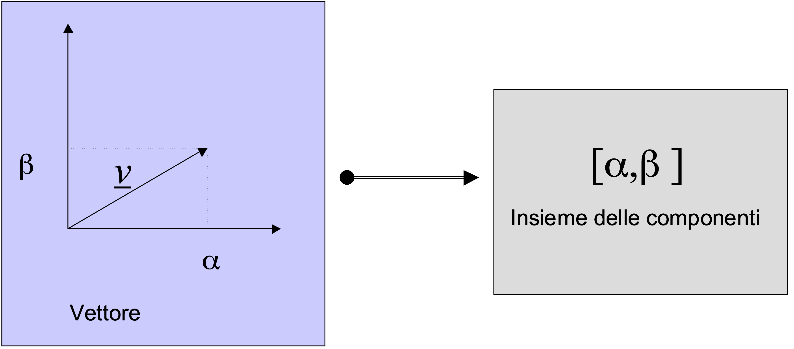
La relazione di eguaglianza espressa in Equazione 1 garantisce la reversibilità, ovvero dati i parametri della trasformazione in componenti vettoriali lungo una coppia di direzioni ortogonali, è possibile risalire esattamente al vettore originario. Vedremo che non tutte le trasformazioni sono reversibili e che la reversibilità garantisce una corretta interpretazione delle operazioni effettuate nel dominio della trasformata. Introducendo ad esempio il concetto di filtro sulle componenti vettoriali come quell’operatore che fornisce la sola componente lungo \mathbf{e}_1 , si ottiene il valore del coefficiente \alpha che si sa essere esattamente corrispondente al vettore tolta la componente lungo l’altra direzione. Questa sembrerebbe una tautologia, ma, applicata alle trasformazioni di segnale, giustifica e fornisce la corretta interpretazione alle operazioni di manipolazione in frequenza quali il filtraggio: in una comune operazione di filtraggio passa-basso si ha la certezza di aver eliminato le componenti armoniche del segnale ad alta frequenza e di aver lasciato inalterate le rimanenti.
Dalla Equazione 1 e la Equazione 2 si ottiene:
\mathbf{v} = (\mathbf{v}\cdot\mathbf{e}_1) \mathbf{e}_1 + (\mathbf{v}\cdot \mathbf{e}_2) \mathbf{e}_2
che riassume i concetti prima espressi.
1.3 Scomposizione di un segnale tempovariante continuo su di una base di funzioni orto-normali
Per i segnali temporali vale un ragionamento analogo. Per semplicità considereremo lo sviluppo in serie invece della trasformata di Fourier in quanto da esso è poi possibile, tramite passaggio al limite, ricavare la formula della trasformata 1.
Una funzione periodica gode della proprietà che g(t)=g(t+nT) per ogni valore n intero. T è il periodo ed f_0 = 1/T è la frequenza fondamentale, mentre \omega = 2\pi f è la pulsazione. Essa può essere scomposta in serie di Fourier come segue.
Avendo un segnale s(t), rappresentabile nel dominio del tempo, si può definire lo sviluppo di Fourier tramite la relazione invertibile:
g(t)=\frac{1}{2}a_o + \sum_{n=1}^{\infty}a_n \cos(\omega_n t) + \sum_{n=1}^{\infty}b_n \sin(\omega_n t) \tag{3}
Dove \omega_n = 2\pi n f_0.
I coefficienti a_n e b_n vengono ricavati secondo le seguenti relazioni:
a_n = \frac{2}{T}\int_0^T g(\tau)\cos(\omega_nt)d\tau \\ b_n = \frac{2}{T}\int_0^T g(\tau)\sin(\omega_nt)d\tau \tag{4}
La Equazione 3 vuol dire scomporre la funzione g(t) secondo la base di funzioni ortogonali armoniche.
NOTA: la Equazione 3 corrisponde anche alla media delle componenti del prodotto elemento per elemento tra i due vettori.
1.3.1 Definizione di prodotto scalare tra funzioni continue e discrete
Il prodotto scalare tra segnali/funzioni periodiche si definisce come:
g(t)\bullet f(t)=\frac{1}{T}\int_0^T g(\tau)f^*(\tau)d\tau \tag{5}
dove con f^*(t) si intende la funzione complessa coniugata di f(t) che, nel caso di funzioni reali, coincide con se stessa.
Le stesse funzioni digitalizzate g_k ed f_k consistono nei due vettori \{g(1), g(2),\dots, g(N)\} e \{f(1), f(2),\dots, f(N)\} e quindi si definisce prodotto scalare tra i segnali digitalizzati:
g_k\bullet f_k=\frac{1}{T}\sum_{i=1}^N g_i f_i = \\ \{g(1), g(2),\dots, g(N)\} \bullet \{f(1), f(2),\dots, f(N)\}^T / N \tag{6}
Di seguito un esempio in R di scomposizione di un’onda quadra su una base ortogonale e sua ricomposizione sulla stessa base. Poi scomposizione e ricomposizione secondo la serie di Fourier. Si noti che un’onda quadra che parte con fronte di salita esattamente con il primo campione risulta essere scomponibile solo mediante sinusoidi per cui dimenticheremo le componenti coseno.
1.3.2 Esempio
Definiamo le funzioni prodotto scalare tra segnali digitalizzati e relativa norma. La prima funzione la definiamo come operatore %ps%:
Per la norma, definiamo la funzione norm_ps (dato che norm è già definita):
norm_ps <- function(A) sqrt(A %ps% A)
(1:5) %ps% (5:1)[1] 7norm_ps(1:5)[1] 3.316625Ora creiamo un segnale onda quadra (il segno dell’onda seno) campionato su 1000 punti tra 0 e 1, con frequenza 2 Hz:
f0 <- 2
fc <- 1000
Tm <- 1
dt <- 1/fc
sin_k <- function(x, f, k=1) sin(2*pi*f*k*x)
df <- tibble(
t = seq(dt, Tm, dt),
ys = sin_k(t, f0),
yq = sign(ys)
)
df %>%
pivot_longer(-t, names_to = "signal") %>%
ggplot(aes(x=t, y=value, color=signal)) +
geom_line() 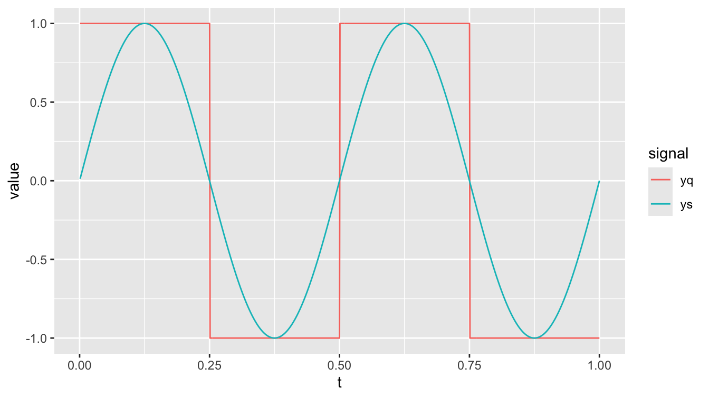
Calcoliamo le prime sette componenti della serie, secondo Equazione 6:
K <- 7
comps <- map_dbl(1:K, \(k) {
s <- sin_k(df$t, f0, k)
df$yq %ps% s/norm_ps(s)
}) %>% zapsmall()
comps[1] 0.9003045 0.0000000 0.3000699 0.0000000 0.1800040 0.0000000 0.1285337Infine approssimiamo l’onda quadra come somma delle prime 7 componenti:
df %>%
mutate(
yqk = reduce(1:K, \(acc, k) {
s <- sin_k(t, f0, k)
acc + comps[k] * s / norm_ps(s)
}, .init=0)
) %>%
pivot_longer(-t, names_to = "signal") %>%
ggplot(aes(x=t, y=value, color=signal)) +
geom_line()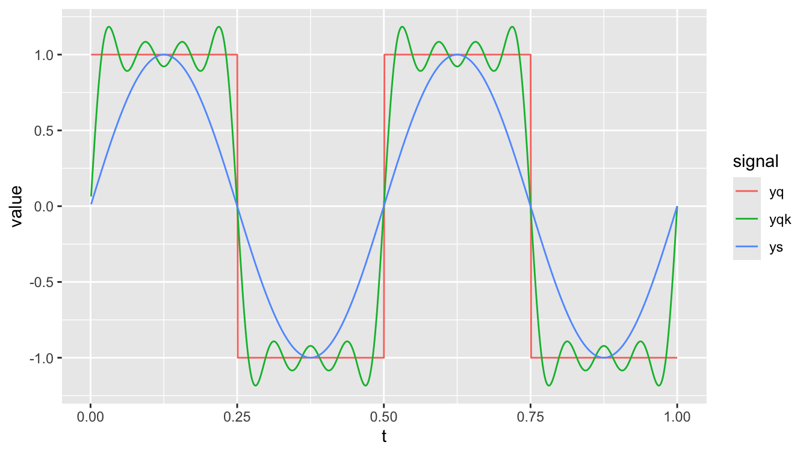
Esercizi
- Partire da K=1 e incrementare di 1 alla volta. Cosa si nota?
- Con f_0=1 aumentare K di alcune centinaia e poi vicino a 500. Cosa succede? Esiste un numero K per cui il segnale ricomposto diviene pressoché perfettamente un’onda quadra?
- Mostrare in un grafico i coefficienti in funzione della frequenza.
- Con f_0 = 4; aumentate K fino ad ottenere un’onda quadra perfettamente ricomposta. Quanto vale K? C’è qualche nesso con il teorema di Nyquist?
- Aumentate ancora K, cosa succede? C’è, di nuovo, qualche nesso con il teorema di Nyquist? Che effetto sta subendo il segnale ricostruito?
1.4 Spettro di un segnale
Dall’esempio qui sopra in cui, per semplicità, ci siamo occupati di un caso in cui sono presenti solo componenti seno abbiamo compreso che lo sviluppo in serie di Fourier di un segnale tempovariante è dato dalla sommatoria pesata di componenti armoniche. Tali armoniche rappresentano una base di funzioni ortogonali ma non ortonormali.
Si ha infatti:
\begin{aligned} \sin(\omega_nt) \bullet \sin(\omega_nt) &= \frac{1}{T}\int_0^T \sin^2(\omega_nt)~dt = \frac{1}{T}\int_0^T\frac{1-2\cos(2\omega_nt)}{2}=\frac{1}{2} \\ \cos(\omega_nt) \bullet \cos(\omega_nt) &= \frac{1}{T}\int_0^T \cos^2(\omega_nt)~dt = \frac{1}{T}\int_0^T\frac{1+2\cos(2\omega_nt)}{2}=\frac{1}{2} \\ \cos(\omega_nt) \bullet \sin(\omega_nt) &= \frac{1}{T}\int_0^T \sin(\omega_nt)\cos(\omega_nt)~dt = \frac{1}{T}\int_0^T\frac{\sin(2\omega_nt)}{2}=0 \\ \cos(\omega_nt) \bullet \cos(\omega_kt) &= \frac{1}{T}\int_0^T \frac{\cos(\omega_nt+\omega_kt)\cos(\omega_nt-\omega_kt)}{2}~dt = 0,\quad n\neq k \\ \sin(\omega_nt) \bullet \sin(\omega_kt) &= \dots = 0 \\ \sin(\omega_nt) \bullet \cos(\omega_kt) &= \dots = 0 \end{aligned} \tag{7}
Per ottenere una scomposizione corretta occorre introdurre al denominatore dei coefficienti il quadrato del modulo (delle componenti la base di funzioni) quindi 1/2 che, portato a numeratore, spiega il fattore 2 nelle Equazione 4.
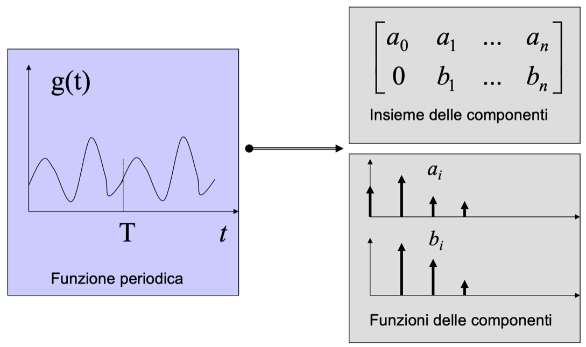
Passiamo ora a come rappresentare le funzioni in maniera analoga a quanto facciamo con i vettori. La Equazione 3 suggerisce infatti la rappresentazione di Figura 2, analoga a quella riportata in Figura 1.
Secondo quanto rappresentato in Figura 2 si potrebbe ragionare indifferentemente (grazie alla relazione di eguaglianza in Equazione 3 sulla funzione del tempo oppure su due funzioni (discrete) che rappresentano le componenti della scomposizione secondo Fourier.
Esiste però una rappresentazione più significativa sia per l’analisi segnali che per la soluzione di equazioni differenziali associate a sistemi lineari. Per determinare tale rappresentazione è necessario elaborare la Equazione 3 impiegando la formula di Eulero, ovvero i fasori:
e^{i\omega_nt} = \cos(\omega_nt) + i\sin(\omega_nt)
che porta ad esprimere le funzioni armoniche seno e coseno come:
\begin{aligned} \cos(\omega_nt)&=\frac{e^{i\omega_nt}+e^{-i\omega_nt}}{2} \\ \sin(\omega_nt)&=\frac{e^{i\omega_nt}-e^{-i\omega_nt}}{2i} \\ \end{aligned} le quali, sostituite nella Equazione 3, comportano:
\begin{aligned} g(t) &= \frac{1}{2}a_o + \sum_{n=1}^\infty a_n\frac{e^{i\omega_nt}+e^{-i\omega_nt}}{2} + \sum_{n=1}^\infty b_n\frac{e^{i\omega_nt}-e^{-i\omega_nt}}{2i} \\ g(t) &= \frac{1}{2}a_o + \frac{1}{2}\sum_{n=1}^\infty (a_n-ib)e^{i\omega_nt} + \sum_{n=1}^\infty (a_n+ib)e^{-i\omega_nt} \end{aligned} dalla quale, ponendo: G_0 = a_0/2 \\ G_n = (a_n-ib)/2 \\ G_{-n} = (a_n + ib_n)/2 = G^* \tag{8} si può scrivere: g(t)=G_0 + \sum_{n=1}^{\infty}G_n e^{i\omega_nt} + \sum_{n=-1}^{-\infty}G_n e^{i\omega_nt} cioè: g(t) = \sum_{n=-\infty}^{\infty}G_n e^{i\omega_nt} \tag{9}
Le componenti, ovvero quanto ognuna di tali funzioni pesa nella ricostruzione della funzione g(t) del tempo, si ricava in maniera analoga: G_n = g(t) \bullet e^{i\omega_nt}=\frac{1}{T}\int_0^T g(\tau)\left(e^{i\omega_n\tau}\right)^*~d\tau = \frac{1}{T}\int_0^Tg(\tau)e^{-i\omega_n\tau}~d\tau \tag{10}
Tale rappresentazione complessa, anche definita spettro del segnale, ha il vantaggio di consentire un’immediata valutazione della risposta di un sistema regolato da equazioni differenziali lineari conoscendo le componenti G_n del segnale in ingresso. La dimostrazione di ciò verrà riportata tra breve nel paragrafo “Funzione di Trasferimento sinusoidale”.
In questo caso la base di funzioni è sia ortogonale come nel caso delle armoniche pure, ma anche normale: e^{i\omega_nt}\bullet e^{i\omega_kt} = \frac{1}{T}\int_0^T e^{i\omega_n\tau}\left(e^{i\omega_k\tau}\right)^*~d\tau=\delta_{n,k} dove \delta_{n,k} è il delta di Kroneker. Nel caso in cui n = k basta seguire i seguenti passaggi: \begin{aligned} e^{i\omega_nt}\bullet e^{i\omega_kt} &= \frac{1}{T}\int_0^T e^{i\omega_n\tau}\left(e^{i\omega_k\tau}\right)^*~d\tau \\ &= \frac{1}{T}\int_0^T (\cos(\omega_n\tau) + i\sin(\omega_n\tau))~(\cos(\omega_n\tau)-i\sin(\omega_n\tau))~d\tau \\ &= \frac{1}{T}\int_0^T \cos^2(\omega_n\tau)~d\tau + \frac{1}{T}\int_0^T \sin^2(\omega_n\tau)~d\tau = \frac{1}{2} + \frac{1}{2} \\ &= 1 \end{aligned}
Nel caso in cui n\neq k la dimostrazione è banale se si considera l’ortogonalità delle funzioni armoniche.
È opportuno anche notare come le componenti G_{-n} e G_n danno vita a segnali armonici reali. Si nota infatti che:
G_n~e^{i\omega_nt} + G_{-n}~e^{-i\omega_nt} = G_n~e^{i\omega_nt} + G_n^*~(e^{i\omega_nt})^* = G_n~e^{i\omega_nt} + (G_n~e^{i\omega_nt})^* che, andando a comporre graficamente i due fasori, fornisce la seguente rappresentazione ed il segnale corrispondente s_n(t) = 2M_n\cos(\omega t+\phi_n)
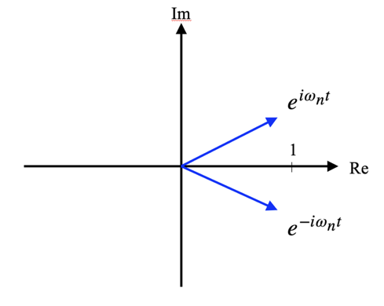
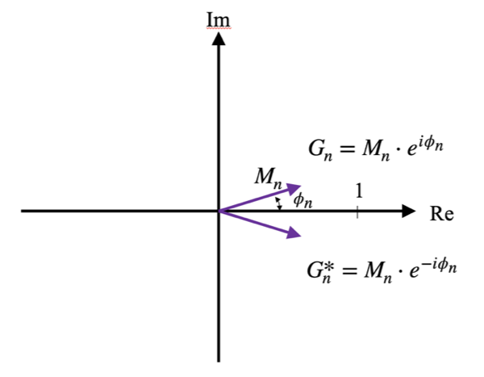
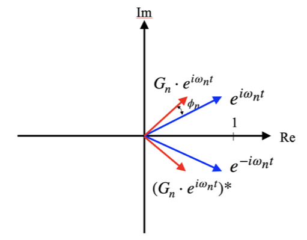
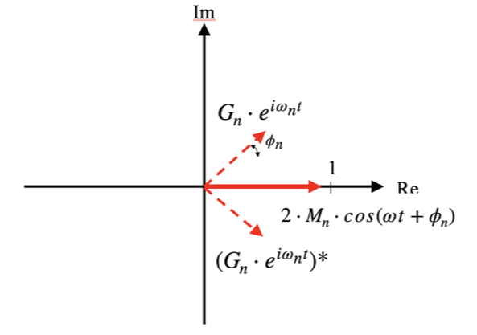
La differenza tra l’espressione dell’equazione Equazione 3 e quella della Equazione 9 è che nel primo caso si tratta di coefficienti a_n e b_n reali, nel secondo di coefficienti complessi di cui, come è schematizzato in Figura 5, è possibile rappresentare le due funzioni modulo e fase in funzione della frequenza. Tali moduli e fasi, è facile convincersene tenendo conto dei passaggi che hanno condotto dalla Equazione 3 alla Equazione 11 e la rappresentazione dei fasori appena riportata, sono proprio i moduli e le fasi delle componenti armoniche che compongono il segnale s(t).
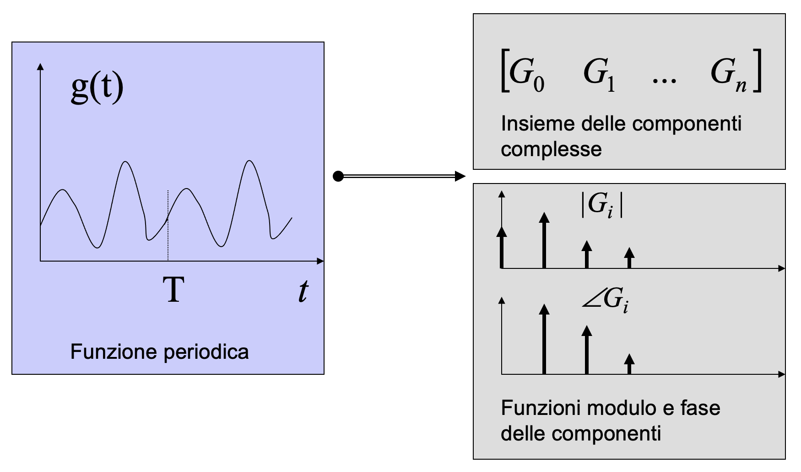
Rappresentiamo di nuovo i segnali in maniera analoga a quanto facciamo con i vettori. La Equazione 10 suggerisce ora la rappresentazione di Figura 5, analoga a quella riportate in figure Figura 2 e Figura 1.
La proprietà della reversibilità, valida per l’eguaglianza espressa nella Equazione 3, permette di effettuare operazioni di manipolazione in frequenza, quindi di antitrasformare tornando nel dominio del tempo avendo la certezza di non aver introdotto ulteriori elaborazioni a causa della doppia trasformazione. Un classico esempio è l’operazione di filtraggio passa-basso su segnali aventi una componente additiva di rumore in alta frequenza. In tale caso l’operazione di filtraggio passa-basso assicura l’eliminazione delle sole componenti in alta frequenza ipotizzate appartenenti al rumore.
1.5 Trasformata di Fourier
Funzioni non periodiche possono essere immaginate come funzioni periodiche dal periodo T \rightarrow \infty e quindi la frequenza fondamentale f_0 \rightarrow 0. Le scomposizioni di Equazione 9 e Equazione 10 assumono la forma definita come Trasformata di Fourier:
\begin{aligned} g(t) &= \frac{1}{2\pi}\int_{-\infty}^\infty G(\omega)~e^{i\omega t}~d\omega \\ G(\omega) &= \int_{-\infty}^\infty g(t)~e^{-i\omega t}~dt \end{aligned} \tag{11} notare la convenzione impiegata per indicare la trasformata di una funzione g(t) con la lettera maiuscola, ovvero come G(\omega).
Di seguito la dimostrazione delle Equazione 11:
Se definiamo:
A_n := T \bullet G_n = \int_0^Tg(t)~e^{-i\omega_nt}~dt questo corrispondere semplicemente a modificare la definizione di prodotto scalare tra funzioni del tempo, che da f(t)\bullet g(t) = \frac{1}{T}\int_0^Tf(t)~g(t)^*~dt diventa: f(t)\bullet g(t) = \int_0^Tf(t)~g(t)^*~dt
Questo serve in quanto, dovendo tendere T\rightarrow\infty, si avrebbe uno 0 che moltiplica l’integrale. Questo viene quindi eliminato dalla definizione.
Ora facciamo tendere T\rightarrow\infty: si ottiene: A_{f=\frac{n}{T}} = A(\omega_n) = \int_{-\infty}^\infty g(t)~e^{-i\omega_nt}~dt Questa corrisponde alla seconda delle Equazione 11. In particolare, i coefficienti discreti A_n diventano una funzione continua della frequenza (o pulsazione) in quanto il passo tra frequenze successive diviene infinitesimo. Dunque, le funzioni che rappresentano le componenti della scomposizione (analoghe a quelle rappresentate in Figura 5) non saranno più funzioni discrete, bensì continue in quanto l’intervallo di spaziatura sulle ascisse (nel dominio della pulsazione) pari a 2\pi/T tende a zero.
Consideriamo ora la Equazione 9:
g(t) = \sum_{n=-\infty}^\infty G_n~e^{i\omega_nt} = \sum_{n=-\infty}^\infty \frac{A_n}{T}~e^{i\omega_nt} = \frac{1}{T} \sum_{n=-\infty}^\infty A~e^{i\omega_nt} se facciamo tendere T\rightarrow\infty, A_n diviene una funzione continua della pulsazione A(\omega) per cui la sommatoria diviene un integrale ottenendo: \int_{-\infty}^\infty A(\omega)~e^{i\omega t}~df = \int_{-\infty}^\infty A(\omega)~e^{i\omega t}\frac{2\pi}{2\pi}~df = \frac{1}{2\pi}\int_{-\infty}^\infty A(\omega)~e^{i\omega t}~d\omega Che corrisponde alla prima delle Equazione 11.
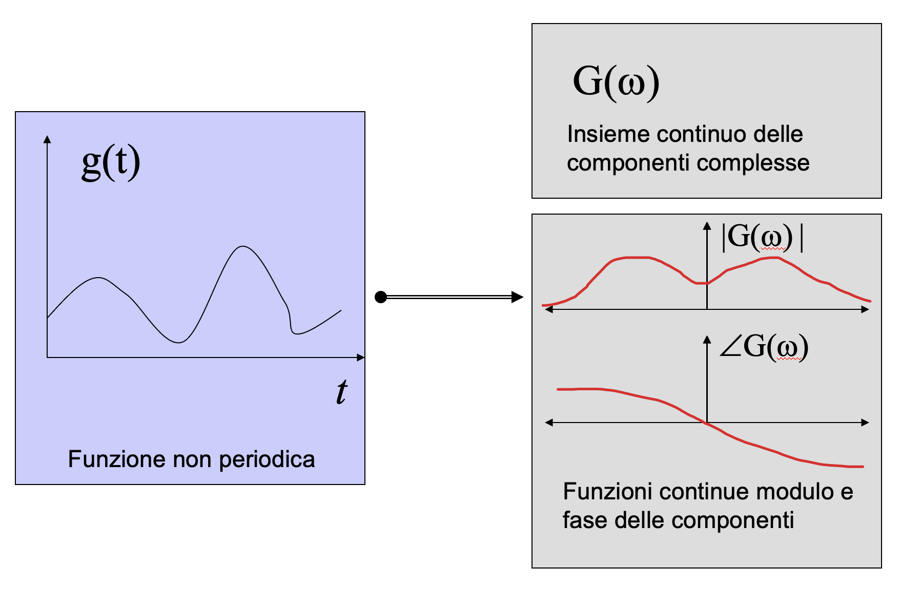
1.6 Rappresentazione dello spettro di un segnale campionato mediante DFT
Nell’elaborazione dei segnali occorre passare a segnali di tipo discreto poiché i dati acquisiti dal modulo di acquisizione digitale e registrati sono delle sequenze finite di valori quantizzati, ovvero dei vettori come già visto. Dunque, nell’elaborazione computerizzata dei segnali non si manipola un segnale s(t), ma un vettore [s(1), s(2), \dots, s(N)] di N valori s(n) campionati alla frequenza di campionamento f_c = 1/T_c.
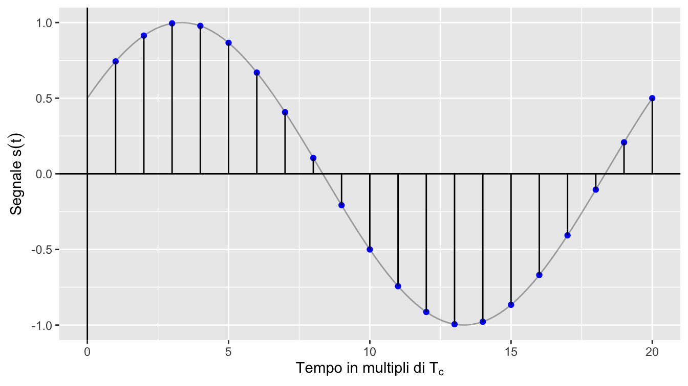
La Trasformata di Fourier Discreta (DFT) è formulata così: s(n)\rightarrow S(k) = \sum_{n=1}^N s(n)~e^{-\frac{2\pi i}{N}k(n-1)}\quad k=0, 1, \dots, N-1
Come era prevedibile, ciascun elemento S(k) della trasformata del segnale discreto, ovvero del vettore, si può calcolare come prodotto di due vettori: S(k) = [s(1), s(2), \dots, s(N)]\cdot[1, e^{-\frac{2\pi i}{N}k}, e^{-\frac{2\pi i}{N}k~2},\dots, e^{-\frac{2\pi i}{N}k~N}]^T Ovvero tra il vettore corrispondente al segnale discreto ed uno dei vettori corrispondenti alla base (uno dei segnali discreti complessi e^{-\frac{2\pi i}{N}kn} base della scomposizione). Anch’essi vettori ortonormali, in altre parole facente parte dei versori nello spazio \mathbb R^N. Si noti che per ricavare le componenti tramite prodotto scalare definito in Equazione 5 manca la normalizzazione per N.
La DFT la si può scrivere evidenziando la corrispondenza tra i vettori nel dominio del tempo discreto s(n) e della frequenza discreta, ovvero lo spettro S(k): [s(1), s(2), \dots, s(N)]\rightarrow [S(1), S(2), \dots, S(N)]
Si noti come lo spettro [S(1), S(2), \dots, S(N)] abbia lo stesso numero di campioni N del segnale [s(1), s(2), \dots, s(N)].
È importante ora capire: cosa rappresentano i diversi coefficienti S(k)? A che frequenze corrispondono i vari k?
Consideriamo S(1) che corrisponde a frequenza nulla: K parte da 0. Stiamo moltiplicando per un segnale costante che possiamo immaginare come un segnale armonico avente periodo infinito (inverso della frequenza: 1/0 = +\infty).
Esso è pari a: S(1)=S(k=0)=\sum_{n=1}^N s(n)~e^0 = \sum_{n=1}^N s(n) Quindi è pari alla somma dei campioni del segnale. Si noti che si ha quindi S(1) = N \bar{s}, sove \bar s è la media del segnale sull’intervallo considerato.
Consideriamo S(2): S(2)=S(k=1)=[s(1), s(2), \dots, s(N)]\cdot[1, e^{-\frac{2\pi i}{N}}, e^{-\frac{2\pi i}{N}\cdot 2},\dots, e^{-\frac{2\pi i}{N}\cdot N}]^T
Quindi S(2), divisa per N, fornirà la componente del segnale s(n) lungo la prima armonica. Si noti infatti che l’esponenziale complesso ha fase che parte da 0 ed arriva a 2\pi esattamente in N campioni eseguendo quindi un solo periodo o giro per il fasore corrispondente. Il periodo totale di campionamento è pari a (N-1)T_c
Di conseguenza la frequenza corrispondente sarà \frac{1}{(N-1)T_c}.
Consideriamo S(3): S(3)=S(k=3)=[s(1), s(2), \dots, s(N)]\cdot[1, e^{-\frac{4\pi i}{N}}, e^{-\frac{4\pi i}{N}\cdot 2},\dots, e^{-\frac{4\pi i}{N}\cdot N}]^T
S(3), diviso sempre per N è la componente del segnale s(n) lungo la seconda armonica. Si noti che l’esponenziale complesso ha fase che parte da 0 ed arriva a 4\pi esattamente in N campioni eseguendo quindi due periodi, o giri, per il fasore corrispondente. Di conseguenza la frequenza corrispondente sarà \frac{2}{(N-1)T_c}. E così via.
Continuando in questo modo, l’ultimo valore dello spettro corrisponderebbe alla frequenza 1/T_c pari alla frequenza di campionamento f_c. Ma sappiamo che ciò non è possibile. Il teorema di Nyquist assegna infatti significato alla sola banda 0\div f_c/2. è questo il motivo per cui dalla frequenza di Nyquist (f_c/2) in poi si ha una ripetizione dello spettro tramite le componenti negative che, assieme alle corrispondenti positive, consentono di ottenere le armoniche come segnali reali.
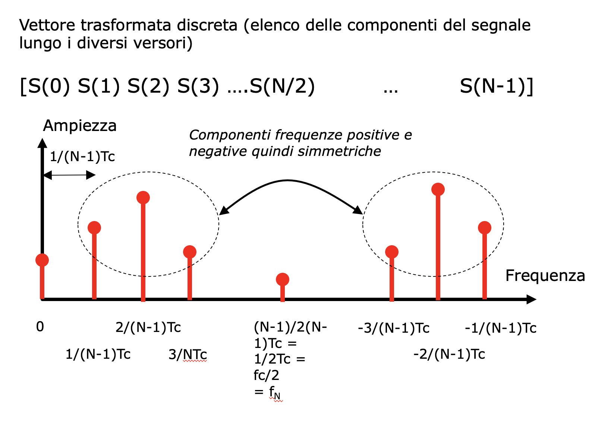
Si veda la Sezione 1.7.1.1 per un esempio.
1.7 La trasformata di Fourier rapida
Come visto sopra, la trasformata di Fourier scompone una serie temporale nelle sue frequenze costituenti, rappresentandola cioè come una somma di oscillazioni armoniche.
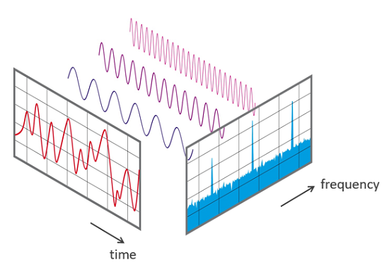
L’algoritmo FFT è una procedura computazionale molto efficiente per calcolare la trasformata di Fourier discreta di un segnale, o serie temporale, campionato. Se x è la serie storica e X è la sua trasformata:
X(k) = \sum_{n=1}^N x(n) e^{-j2\pi k n/N}
dove k=1, 2, \dots, N-1 e N è il numero di osservazioni campionate.
Si noti che la trasformata di un segnare reale è una serie di numeri complessi, la cui parte reale rappresenta l’intensità mentre la parte immaginaria rappresenta la fase.
1.7.1 Esempio
1.7.1.1 Creiamo una serie di dati
Creiamo una serie temporale ottenuta combinando sinusoidi con diversi parametri di ampiezza w, frequenza f e fase \phi. Per farlo definiamo una funzione di supporto:
signal <- function(t, pars, rad=FALSE) {
stopifnot(is.data.frame(pars))
if (!rad) {
pars$phi <- pars$phi/180*pi
pars$f <- 2*pi*pars$f
}
with(
pars,
map_dbl(t, \(t) map_vec(seq_along(w), ~ w[.]*sin(t*f[.]+phi[.])) %>% sum())
)
}Ora creiamo un segnale composto da tre sinusoidi,
pars <- tibble(
w = c(1, 0.2, 0.5, 0.25),
f = c(4, 10, 2, 30),
phi = c(0, 0, 0, 90)
)| w (-) | f (Hz) | \phi (°) |
|---|---|---|
| 1.00 | 4 | 0 |
| 0.20 | 10 | 0 |
| 0.50 | 2 | 0 |
| 0.25 | 30 | 90 |
s <- tibble(
t = seq(0, 10, length.out = 5000),
y = signal(t, pars, rad=FALSE) + rnorm(length(t), 0, 0.5) + 1.25
)
s %>%
ggplot(aes(x=t, y=y)) +
geom_line(linewidth=0.1)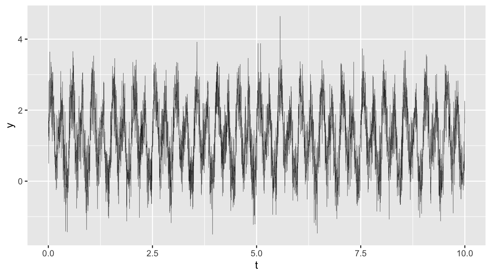
1.7.1.2 Spettrogramma mediante FFT
R mette a disposizione la funzione fft() nella libreria base:
s.fft <- fft(s$y)
summary(s.fft) Length Class Mode
5000 complex complex Quindi la trasformata è un vettore complesso con lo stesso numero di osservazioni del segnale iniziale.
s %>%
mutate(
i = 1:n(),
fft = fft(y),
intensity = Mod(fft),
phase = Arg(fft)/pi*180
) %>%
ggplot(aes(x=i, y=intensity)) +
geom_line()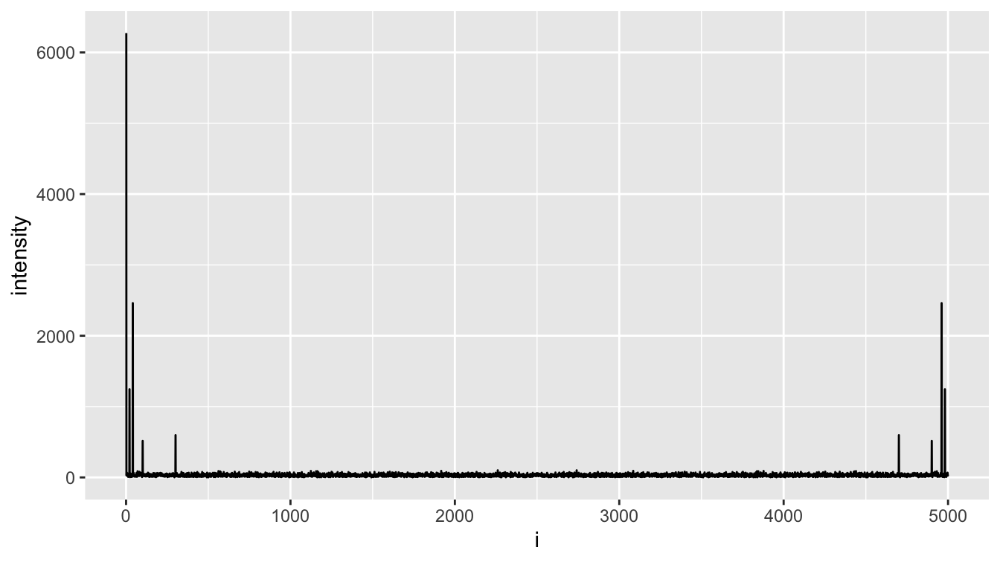
Cosa c’è in ascissa? La trasformata copre un intervallo di frequenze [0, N/T], con T=N\delta t la durata complessiva del segnale. L’intensità dei picchi (cioè il modulo del valore complesso) corrisponde invece all’ampiezza delle componenti, scalata con il numero di osservazioni:
s.fft <- s %>%
mutate(
i = 1:n()-1,
fft = fft(y),
intensity = Mod(fft) / n() * 2,
phase = Arg(fft)/pi*180,
f = i / max(t)
) %>%
slice_head(
n = nrow(.)/2
)Messa in grafico otteniamo lo spettro in frequenza del segnale:
s.fft %>%
ggplot(aes(x=f, y=intensity)) +
geom_vline(xintercept=pars$f, color="red", linewidth=0.25) +
geom_line(linewidth=0.2) +
geom_point(size=0.5) +
coord_cartesian(xlim=c(0, 35)) +
labs(x="frequenza (Hz)", y="intensità (-)")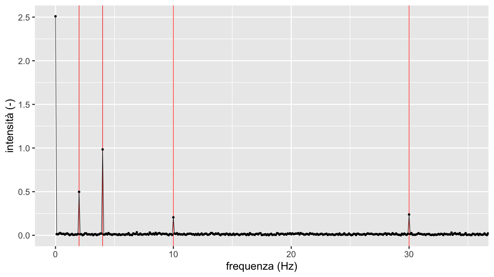
pars1.7.2 Finestre
Consideriamo un segnale sinusoidale privo di disturbo, campionato per un tempo pari a 10 volte il suo periodo più mezzo periodo:
pars <- tibble(
w = c(1),
f = c(10),
phi = c(0)
)
s <- tibble(
t = seq(0, 1+1/pars$f/2, length.out = 512),
y = signal(t, pars, rad=FALSE) + rnorm(length(t), 0, 0.0)
)
s %>%
ggplot(aes(x=t, y=y)) +
geom_line()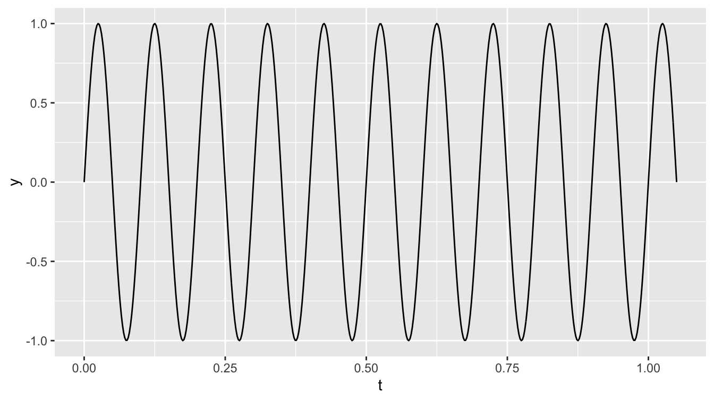
Ora osserviamo la FFT
s %>%
mutate(
f = 0:(n()-1)/max(t),
fft = fft(y),
intensity = Mod(fft) / n() * 2,
phase = Arg(fft)/pi*180
) %>%
slice_head(n=nrow(.)/2) %>%
ggplot(aes(x=f, y=intensity)) +
geom_vline(xintercept=10, linetype=2, color="red") +
geom_spoke(aes(angle=pi/2, y=0, radius=intensity), linewidth=0.2) +
geom_point(shape=21) +
coord_cartesian(xlim=c(0, 100))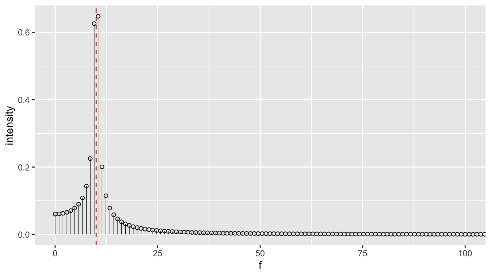
Come si vede, la FFT è allargata, in maniera inattesa, attorno al picco a 10 Hz: come mai?
Bisogna ricordare che la FFT assume che il segnale sia periodico e campionato per un numero di cicli interi. Cioè è come se il segnale si ripetesse all’infinito uguale a se stesso dopo (e prima) la fine del campionamento. Nel nostro caso, quindi, è come se il segnale fosse come il seguente:
s %>% mutate(step="A") %>%
bind_rows(mutate(s, step="B", t=t+last(t))) %>%
ggplot(aes(x=t, y=y, color=step)) +
geom_line()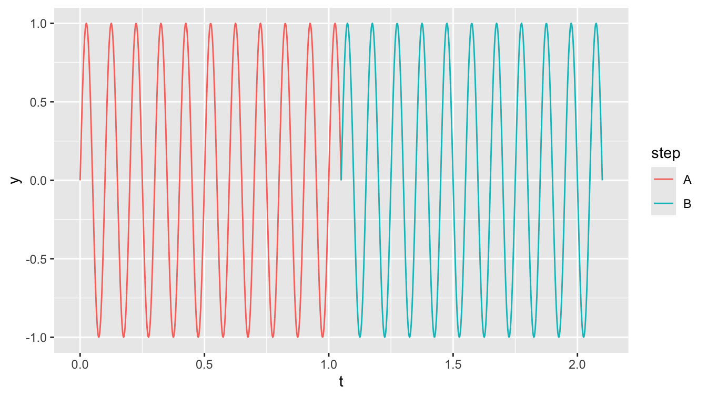
È evidente come ogni \Delta T=1.05+0.05 secondi ci sia un evento con una discontinuità sulla derivata del segnale, che si ripete periodicamente. Cioè si ha un evento con un ampio contenuto in frequenza (per ottenere uno spigolo bisogna sommare molte componenti!) attorno alla frequenza pari all’inverso della durata del campionamento. È altrettanto evidente come, ad eccezione del caso in cui la durata del campionamento è un multiplo esatto di tutti i periodi contenuti nel segnale, ciò significa che la parte a bassa frequenza dello spettro sarà sempre sporcata alla frequenza pari all’inverso della durata del campionamento.
Esercizio
Provare a modificare i parametri di frequenza e durata del campionamento per osservare il risultato.
Per mitigare questo problema si ricorre alla finestratura (windowing) del segnale: si moltiplica il segnale per una funzione che va a zero, o quasi, all’inizio e alla fine del campionamenti. Esistono diverse funzioni di finestratura, le più utilizzate sono quella di Hamming e quella di Hann.
Il pacchetto gsignal le mette a disposizione entrambi (ed altre):
s %>%
mutate(
i = 1:n(),
win = hann(n()),
yw = y * win
) %>%
ggplot(aes(x=i)) +
geom_line(aes(y=win), color="red", linetype=2) +
geom_line(aes(y=-win), color="red", linetype=2) +
geom_line(aes(y=yw))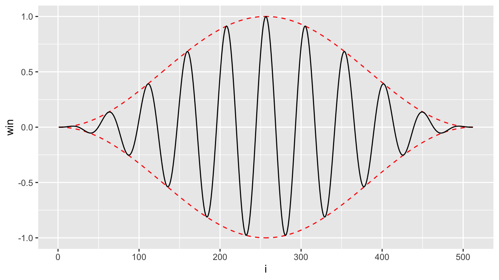
A questo punto il segnale è ovviamente perfettamente periodico e, se calcoliamo la FFT del segnale modificato con la finestra di Hann, otteniamo:
s %>%
mutate(
f = 0:(n()-1)/max(t),
yw = hann(n()) * y,
fft = fft(yw),
intensity = Mod(fft) / n()*2,
phase = Arg(fft)/pi*180
) %>%
slice_head(n=nrow(.)/2) %>%
ggplot(aes(x=f, y=intensity)) +
geom_vline(xintercept=10, linetype=2, color="red") +
geom_spoke(aes(angle=pi/2, y=0, radius=intensity), linewidth=0.2) +
geom_point(shape=21) +
coord_cartesian(xlim=c(0, 100))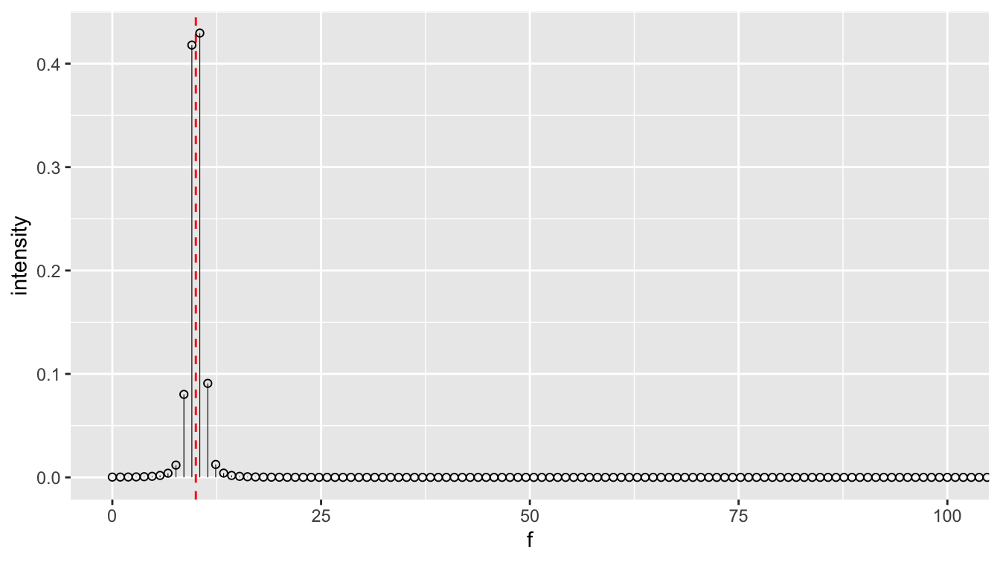
Possiamo osservare come il contributo della durata del campionamento sia pressoché svanito, anche se risulta ovviamente ridotta l’intensità dei picchi a 10 Hz, dato che l’ampiezza media del segnale è anch’essa ridotta.
Esercizio
Provare a cambiare funzione finestra utilizzando hamming() o una delle altre finestre messe a disposizione da gsignal.
1.8 Tabella riassuntiva
| Oggetto | Sviluppo in serie o scomposizione dell’oggetto | Calcolo coefficienti |
|---|---|---|
| Vettore \mathbf v | \mathbf{v} = \alpha \mathbf{e}_1 + \beta \mathbf{e}_2 dove \mathbf e_1, \mathbf e_2 sono i versori di una base ortogonale |
\alpha = \mathbf{v}\cdot\mathbf{e}_1 \beta = \mathbf{v}\cdot\mathbf{e}_2 |
Segnale periodico g(t) nel tempo continuo (sviluppo di Fourier) Segnale periodico g(t) nel tempo continuo (sviluppo di Fourier) |
g(t)=\frac{a_0}{2}+\sum_{n=1}^\infty a_n\cos(\omega_nt) +\sum_{n=1}^\infty b_n\sin(\omega_nt) dove \omega_n=2\pi nf_0 |
a_n=\frac{2}{T}\int_0^Tg(t)\cos(\omega_nt)~dt b_n=\frac{2}{T}\int_0^Tg(t)\sin(\omega_nt)~dt |
| Segnale periodico g(t) nel tempo continuo (sviluppo mediante fasori) | g(t)=\sum_{n=-\infty}^\infty G_n~e^{i\omega_n t} dove \omega_n = 2\pi n f_0 |
G_n=\frac{1}{T}\int_0^T g(t)~e^{-i\omega_nt}~dt |
| Segnale generico, NON periodico nel tempo continuo | g(t)=\frac{1}{2\pi}\int_{-\infty}^\infty G(\omega)~e^{i\omega t}~dt | G(\omega=\frac{1}{T}\int_0^T g(t)~e^{-i\omega_nt}~dt |
| Segnale digitale s(n)=[s(1),s(2),\dots,s(N)] | s(n)=\frac{1}{N}\sum_{k=0}^{N-1}S(k)~e^{\frac{2\pi i}{N}k(n-1)} n=1, 2, \dots, N |
S(K)=\sum_{n=1}^{N}s(n)~e^{-\frac{2\pi i}{N}k(n-1)} k=0, 1, \dots, N-1 |
Notare che per segnali digitali, campionati in un intervallo di tempo finito e quantizzati, non ha senso chiedersi se siano periodici o meno. Semplicemente non lo sappiamo. In ogni caso la minima armonica contenuta vale 1/(intervallo di acquisizione) e ci saranno le sue multiple in modo analogo ai segnali periodici nel tempo continuo.
1.9 Alcune proprietà della trasformata di Fourier
La trasformata di Fourier gode delle proprietà elencate in Tabella 2.
| Proprietà | Relazione nel dominio del tempo e dello spettro |
|---|---|
| Linearità | a x(t) + b y(t)\rightarrow a X(\omega) + b Y(\omega) |
| Derivata | \dot x(t) \rightarrow i\omega X(\omega) |
| Integrale | \int_0^t x(\tau)~d\tau \rightarrow \frac{1}{i\omega}X(\omega) |
| Variazione scala | x(at)\rightarrow\frac{1}{|a|}X\left(\frac{\omega}{a}\right) |
| Anticipo/Ritardo | x(t-\tau)\rightarrow X(\omega)~e^{-i\omega\tau} |
| Modulazione | x(t)~e^{-i\omega_0t}\rightarrow X(\omega-\omega_0) |
| Convoluzione | x(t) \otimes y(t)\rightarrow X(\omega)Y(\omega) |
| Prodotto | x(t)y(t)\rightarrow X(\omega)\otimes Y(\omega) |
1.9.1 Dimostrazione di alcune proprietà
Di seguito le dimostrazioni:
1.9.1.1 Linearità
\begin{aligned} \Im(a~x(t) + b~y(t)) &= \int_{-\infty}^\infty \left[a~x(t) + b~y(t)\right]~e^{-i\omega t}~dt \\ &= \int_{-\infty}^\infty a~x(t)~e^{-i\omega t}~dt + \int_{-\infty}^\infty b ~x(t)~e^{-i\omega t}~dt \\ &= a\int_{-\infty}^\infty x(t)~e^{-i\omega t}~dt + b\int_{-\infty}^\infty~x(t)~e^{-i\omega t}~dt \\ &= a~X(\omega) + b~Y(\omega) \end{aligned}
1.9.1.2 Derivata
Differenziando la trasformata inversa di X(\omega) rispetto al tempo (che equivale a derivare il segnale x(t)), si ottiene:
\begin{aligned} \frac{d}{dt}x(t) &= \frac{d}{dt}\left\{\frac{1}{2\pi}\int_{-\infty}^\infty X(\omega)~e^{i\omega t}~d\omega \right\} \\ &= \frac{1}{2\pi} \int_{-\infty}^\infty X(\omega)~\frac{d}{dt}\left(e^{i\omega t}\right)~d\omega \\ &= \frac{1}{2\pi} \int_{-\infty}^\infty \left[i\omega X(\omega)\right]~e^{i\omega t}~d\omega \\ &= \Im^{-1}\left\{i\omega X(\omega)\right\} \end{aligned}
1.9.1.3 Convoluzione
\begin{aligned} x(t) \otimes y(t) &= \int_{-\infty}^\infty x(\tau)y(t-\tau)~d\tau \\ \Im\left\{x(t) \otimes y(t)\right\} &= \int_{-\infty}^\infty\left[ \int_{-\infty}^\infty x(\tau)y(t-\tau)~d\tau \right]~e^{-i\omega t}~dt \\ &= \int_{-\infty}^\infty x(\tau)\left[ \int_{-\infty}^\infty y(t-\tau)~e^{-i\omega t}~dt\right]~d\tau \\ &= \int_{-\infty}^\infty x(\tau)\left[ \int_{-\infty}^\infty y(\xi)~e^{-i\omega \xi}~e^{-i\omega \tau}~d\xi\right]~d\tau \\ &= \int_{-\infty}^\infty x(\tau)~e^{-i\omega\tau} \left[ \int_{-\infty}^\infty y(\xi)~e^{-i\omega \xi}~d\xi\right]~d\tau \\ &= X(\omega)Y(\omega) \end{aligned}
Si noti che si è sostituita la variabile t con t-\tau nell’integrale ‘interno’ nella seguente maniera: \begin{aligned} \xi &= t - \tau \\ t &= \xi + \tau \\ d\xi &= dt \end{aligned}
Gli estremi di integrazione, essendo da -\infty a +\infty rimangono invariati. Questa proprietà è connessa con la soluzione di equazioni differenziali lineari che nel dominio del tempo corrisponde ad una operazione di convoluzione, nel dominio della frequenza ad una semplice moltiplicazione di funzioni della frequenza.
1.9.1.4 Ritardo/anticipo
\begin{aligned} \Im\left\{x(t\pm t_0)\right\} &= \int_{-\infty}^\infty x(t\pm t_0)~e^{-i\omega t}~dt \\ &= \int_{-\infty}^\infty x(t')~e^{-i\omega (t'\mp t_0)}~dt' \\ &= e^{\pm i\omega t_0} \int_{-\infty}^\infty x(t')e^{-i\omega t'}~dt' \\ &= X(\omega)~e^{\pm i \omega t_0} \end{aligned}
Questa proprietà evidenzia come un ritardo/anticipo di un segnale nel tempo ha influenza solo sulla fase dello spettro mentre ne lascia invariato il modulo (il fattore esponenziale con argomento immaginario ha modulo unitario e fase pari all’argomento stesso). Intuitivamente questo è ovvio in quanto le componenti dello sviluppo in serie saranno identiche come ampiezza mentre saranno ritardate/anticipate di t_0. Considerando una singola componente dello sviluppo inserire ad esempio: a_n\cos(\omega_n(t\pm t_0)) = a_n\cos(\omega_n t \pm \omega_n t_0) che evidenzia lo sfasamento proporzionale alla pulsazione moltiplicato per t_0.
2 Funzioni di trasferimento
La trasformata di Fourier, grazie alle sue proprietà, consente la manipolazione di un’equazione differenziale in modo da farla diventare un’equazione algebrica funzione di un parametro complesso: la pulsazione. Questo apre la scena ai metodi classici di signal processing quali il filtraggio, la definizione di modelli dinamici di sistemi complessi e strumenti di misura, la modellazione del rumore bianco e colorato, etc.
2.1 Trasformazione di un’equazione differenziale in un’equazione algebrica nel dominio delle frequenze: Funzione di Trasferimento
Supponiamo di avere un sistema regolato da una equazione differenziale del secondo ordine:
\frac{d^2y(t)}{dt^2} + a\frac{dy(t)}{dt} + b~y(t) = c~u(t)
dove la u(t) è la forzante, ovvero l’ingresso, mentre la y(t) è la risposta, ovvero l’uscita.
Trasformando secondo Fourier la derivata prima e seconda dell’uscita, tenendo presente le proprietà enunciate in Tabella 2, si ottiene:
\frac{dy(t)}{dt}\rightarrow i\omega Y(\omega) e \frac{d^2y(t)}{dt^2}\rightarrow i\omega(i\omega Y(\omega)) e quindi la equazione differenziale diventa: (i\omega)^2Y(\omega) + i\omega a~Y(\omega) + b~Y(\omega) = c~U(\omega) che non è altro se non una equazione algebrica che può essere risolta rispetto all’uscita: Y(\omega) = \frac{c}{b + i\omega~a + (i\omega)^2}~U(\omega)
Tale relazione indica che la trasformata dell’uscita del sistema è pari alla trasformata dell’ingresso moltiplicata per una funzione anch’essa della frequenza (o pulsazione) che dipende solamente dalla forma dell’equazione differenziale che regola il sistema stesso, ovvero dai parametri a, b e c. Tale funzione complessa viene definita Funzione di Trasferimento.
Per convenzione la funzione di trasferimento viene indicata come H(\omega) per cui la precedente relazione si scrive in forma generale: Y(\omega) = H(\omega)U(\omega) \tag{12}
Dalla precedente è immediato ricavare la funzione di trasferimento come rapporto delle trasformate: H(\omega) = \frac{Y(\omega)}{U(\omega)} In generale l’uscita di un sistema lineare si può ottenere in due maniere:
- in frequenza: moltiplicazione della trasformata dell’ingresso per la funzione di trasferimento
- nel tempo: convoluzione tra ingresso ed antitrasformata della funzione di trasferimento (risposta del sistema ad un impulso ideale).
La funzione di trasferimento, oltre che esplicitamente ricavata dalla relazione differenziale data dalla fisica del fenomeno, può essere ricavata trasformando la risposta del sistema ad un impulso.
Per fare ciò introduciamo il concetto di delta di Dirac che modella un impulso ideale. Essa vale infinito per un tempo infinitesimo. Si definisce \delta(t-t_0) quella funzione che vale infinito per t = t_0 ed è nulla altrove. Se integrata tale funzione, avendo dominio infinitesimo ma valore infinito, risulta: \int_{-\infty}^\infty \delta(t-t_0)~dt = 1
Calcoliamone dunque la sua trasformata: \delta(t)\rightarrow \int_{-\infty}^\infty \delta(t)~e^{-i\omega t}~dt = \int_{-\infty}^\infty \delta(t)~e^{-i\omega (t=0)}~dt = \int_{-\infty}^\infty \delta(t) = 1\quad \forall\omega
Se quindi si impiega tale funzione come ingresso ad un generico sistema, si ottiene che U(\omega) = 1 per ogni frequenza e quindi Y(\omega) = H(\omega). Questo è il principale motivo per il quale chi si occupa di identificazione/caratterizzazione dei sistemi meccanici impiega martelletti strumentati per imporre degli impulsi sulle strutture e registrarne le vibrazioni nei diversi punti di interesse per ricavare la h(t) ovvero, tramite trasformata di Fourier, la H(\omega) che lega sollecitazioni nel punto di applicazioni dell’impulso alla risposta nel punto di registrazione delle vibrazioni. Torneremo su questo argomento nel terzo paragrafo.
Nel prossimo paragrafo evidenziamo un ulteriore punto di vista sulla funzione di trasferimento che può essere vista come quella funzione che in modulo indica l’attenuazione di una qualsiasi armonica venga posta in ingresso ed in fase il suo sfasamento. Da ciò prende anche il nome di funzione di trasferimento ‘sinusoidale’.
2.2 Funzione di trasferimento sinusoidale
Consideriamo un sistema dinamico lineare caratterizzato da una funzione di trasferimento H(\omega). Iniettiamo un ingresso puramente armonico di tipo sinusoidale, come schematizzato nel diagramma a blocchi di Figura 10.
Imponendo in ingresso u(t)=\sin(\omega_0 t) vogliamo determinare l’uscita y(t). Vedremo che si determina in maniera immediata dalla conoscenza di modulo e fase della funzione di trasferimento in corrispondenza della pulsazione dell’ingresso.
Per determinarlo passiamo attraverso le trasformate, dunque trasformiamo l’ingresso: u(t)=\sin(\omega_0 t) \otimes U(\omega) = \int_{-\infty}^\infty \sin(\omega_0 t)~e^{-i\omega t}~ dt = \\ = \int_{-\infty}^\infty \sin(\omega_0 t)(\cos(\omega t) - i\sin(\omega t)) ~dt
Tale trasformata vale chiaramente zero \forall\omega \neq\pm\omega_0 grazie alla proprietà di ortonormalità delle funzioni armoniche. Per \omega = \omega_0 ed \omega = -\omega_0 occorre invece calcolarne i valori.
\begin{aligned} U(\omega_0) &= \int_{-\infty}^\infty \sin(\omega_0 t)(- i\sin(\omega_0 t)) ~dt = -i\int_{-\infty}^\infty \sin^2(\omega_0 t)~dt \\ &= -i \int_{-\infty}^\infty \frac{1-\cos(2\omega_0 t)}{2}~dt = -\frac{i}{2} \cdot\infty \\ U(-\omega_0) &= \int_{-\infty}^\infty \sin(\omega_0 t)(i\sin(\omega_0 t)) ~dt = i\int_{-\infty}^\infty \sin^2(\omega_0 t)~dt \\ &= i \int_{-\infty}^\infty \frac{1-\cos(2\omega_0 t)}{2}~dt = \frac{i}{2} \cdot\infty \\ \end{aligned}
Volendo rappresentare lo spettro della funzione seno si ha dunque il grafico in Figura 8.
Globalmente la trasformata dell’ingresso si può scrivere quindi come somma di due delta di Dirac: U(\omega) = \frac{i}{2}\delta(\omega + \omega_0)- \frac{i}{2}\delta(\omega-\omega_0) dove con delta di Dirac \delta(\omega-\omega_0) si intende la funzione che vale infinito per \omega=\omega_0) ed è nulla altrove. Se integrata, tale funzione, avendo dominio infinitesimo ma valore infinito, risulta \int_{-\infty}^\infty\delta(\omega-\omega_0)~d\omega. Se come argomento dell’integrale si ha una generica funzione H(\omega), risulta \int_{-\infty}^\infty H(\omega)\delta(\omega-\omega_0)~d\omega = H(\omega_0). Questo semplicemente perché l’infinito rappresentato dalla delta di Dirac moltiplica il valore della funzione in corrispondenza della pulsazione \omega_0 facendo assumere al prodotto un valore infinito di modulo H(\omega_0) che, integrato su di un dominio infinitesimo produce un risultato finito pari al valore assunto dalla funzione in corrispondenza della pulsazione \omega_0). A questo punto è immediato determinare il valore della trasformata dell’uscita: Y(\omega) = H(\omega)U(\omega) = H(\omega) \left( \frac{i}{2}\delta(\omega + \omega_0) - \frac{i}{2}\delta(\omega - \omega_0) \right) che porta ad avere una somma di due delta con moduli pari al valore della funzione di trasferimento in corrispondenza dei due infiniti: Y(\omega) = H(-\omega_0)\frac{i}{2}\delta(\omega+\omega_0) - H(\omega_0)\frac{i}{2}\delta(\omega-\omega_0)
La funzione di trasferimento può essere scomposta in modulo e fase: H(\omega) = M(\omega)~e^{-i\Phi(\omega)} per cui si ha: Y(\omega)=M(\omega_0)\frac{i}{2}\delta(\omega + \omega_0)~e^{-i\Phi(\omega_0)} - M(\omega_0)\frac{i}{2}\delta(\omega - \omega_0)~e^{-i\Phi(\omega_0)} In cui si sono semplicemente sostituiti i valori e considerata la proprietà dello spettro si un segnale reale: modulo simmetrico e fase antisimmetrica, secondo la Equazione 8.
Considerando l’equazione di Eulero: e^{i\Phi(\omega_0)}=\cos(\Phi(\omega_0)) + i\sin(\Phi(\omega_0)) si ottiene, dopo semplice manipolazione: \frac{Y(\omega)}{M(\omega_0)} = \cos(\Phi(\omega_0)) \left[ \frac{i}{2}\delta(\omega+\omega_0) - \frac{i}{2}\delta(\omega-\omega_0) \right] + \\ + \sin(\Phi(\omega_0)) \left[ \frac{1}{2}\delta(\omega+\omega_0) + \frac{1}{2}\delta(\omega-\omega_0) \right]
Del primo termine sappiamo immediatamente calcolare l’antitrasformata avendo appena calcolato la trasformata della funzione seno. Il secondo termine è anche immediatamente antitrasformabile in quanto vale: \cos(\omega_0 t) = \frac{1}{2}\delta(\omega+\omega_0) + \frac{1}{2}\delta(\omega-\omega_0)
In definitiva, quindi: y(y) = M(\omega_0)\cos(\Phi(\omega_0)) \sin(\omega_0 t) + M(\omega_0)\sin(\Phi(\omega_0)) \cos(\omega_0 t) ovvero: y(t) = M(\omega_0)\sin(\omega_0t + \Phi(\omega_0)) Che esprime il fatto che se si pone in ingresso ad un sistema regolato da equazioni differenziali lineari un ingresso armonico di modulo unitario e pulsazione \omega_0, l’uscita sarà un’armonica di pari pulsazione \omega_0 ma di modulo pari al modulo della funzione di trasferimento H(\omega_0) calcolata per la pulsazione \omega_0 e sfasata della fase della funzione di trasferimento \Phi(\omega_0)) calcolata per la stessa pulsazione \omega_0.
A tale risultato era possibile giungere semplicemente considerando la Equazione 12: \begin{aligned} Y(\omega) &= H(\omega)U(\omega)=M_H(\omega)~e^{i\Phi_H(\omega)} M_U(\omega)~e^{i\Phi_U(\omega)} \\ &= M_H(\omega) M_U(\omega)~e^{i(\Phi_H(\omega) + \Phi_U(\omega))} \end{aligned} che esprime appunto il fatto che i moduli si moltiplicano e le fasi si sommano.
2.3 Impiego della Funzione di trasferimento per l’elaborazione dei segnali: Filtraggio in frequenza
Un sistema dinamico lineare per il quale esiste una funzione di trasferimento sinusoidale può rappresentare diverse cose:
- un elemento che elabora segnali: la funzione di trasferimento non è utile solo per la soluzione di equazioni differenziali che divengo semplici equazioni algebriche, ma anche per effettuare elaborazioni sulle componenti armoniche di un generico segnale e prevedere quali armoniche conterrà l’uscita in base al suo diagramma di Bode. Tali blocchi di elaborazione possono servire per ridurre il rumore in alta frequenza (filtri passa basso), quello in bassa (filtri passa alto), etc;
- uno strumento di misura: la funzione di trasferimento in questo caso descrive come lo strumento modifica le componenti armoniche di un segnale da misurare (misurando) e prevedere quali armoniche conterrà l’uscita dello strumento in base al suo diagramma di Bode. Va da sé che uno strumento ideale dovrebbe far passare tutte le armoniche del misurando inalterate. Ovvero né alterate in ampiezza e neppure sfasate. In questo modo esiste una corrispondenza esatta (a meno di un fattore di conversione proporzionale) tra uscita e misurando in ingresso. Questo a volte è possibile, a volte no. Come vedremo, se uno strumento è particolarmente ‘lento’, esso distorcerà significativamente le ampiezze e sfaserà altrettanto significativamente le fasi delle componenti armoniche tanto più si va su in frequenza. In questi casi, per stimare correttamente il misurando, occorre invertire la funzione di trasferimento in una procedura analoga a quella vista per l’operazione di misura di una grandezza statica. Questa procedura può essere definita Compensazione Dinamica che vedremo in uno dei prossimi paragrafi.
2.3.1 Esempio di riduzione del rumore in alta frequenza su di un segnale di temperatura
Si consideri il segnale ed il modulo del suo spettro mostrate in Figura 10 (una misura di temperatura tramite PT100 su di una piastra termostatata che regola la temperatura tra due valori soglia). Se il segnale viene posto in ingresso ad un sistema che possiede una funzione di trasferimento passa basso, si ottiene un segnale in uscita con le medesime componenti in bassa frequenza mentre quelle in alta sono attenuate.
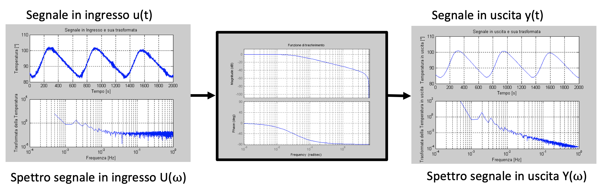
È possibile notare che il segnale in uscita non mostra più il rumore originario in alta frequenza in quanto la funzione di trasferimento ha attenuato proprio le componenti armoniche ad alta frequenza che non appartenevano ad un andamento di temperatura. La dinamica termica è infatti generalmente ‘lenta’. Appartenevano, ad esempio, al rumore elettromagnetico di natura interferente.
Le tipologie di filtri sono dette
- passa-basso nel caso in cui vengano mantenute le componenti a bassa frequenza ed eliminate quelle ad lata frequenza;
- passa-alto nel caso contrario;
- passa-banda nel caso in cui vengano lasciate immutate le componenti appartenenti ad una data frequenza ed eliminate le altre;
- elimina-banda nel caso opposto.
L’ordine del filtro coincide con l’ordine del sistema lineare corrispondente al filtro e definisce, nel diagramma di Bode, la pendenza di modulo(espresso nel diagramma logaritmico in decibel per decade) ed andamento della fase. Altro parametro importante è la frequenza di taglio f_c definita come quella frequenza alla quale il segnale viene distorto in modo trascurabile, quindi:
- la massima attenuazione (o amplificazione) della potenza delle armoniche è pari al 50%, ovvero l’ampiezza viene attenuata di un fattore uno su radice di due, in termini logaritmici quindi \pm 3 dB;
- lo sfasamento è pressoché lineare (introducendo eventualmente un ritardo ma non una distorsione). A tale conclusione si arriva considerando la proprietà dell’anticipo-ritardo della trasformata.
Alla frequenza di taglio corrisponde implicitamente una banda passante che sarà da 0 ad f_c nel caso di passa basso, da f_c ad infinito nel caso di passa alto.
2.3.2 Filtri online
Il filtro online opera direttamente sul segnale temporale elaborandolo mano mano che esso si presenta, campione dopo campione tramite una successione per ricorrenza. La dimostrazione del fatto che un sistema reale si comporta nel dominio discreto come una successione per ricorrenza la si ottiene:
- moltiplicando la trasformata di un segnale d’ingresso per la funzione di trasferimento
- antitrasformando
- discretizzando la derivata
Proviamo quanto detto con un filtro del primo ordine avente uno zero ed un polo:
Sappiamo che: Y(\omega) = \frac{1+i\omega\tau_N}{1+i\omega\tau_D}U(\omega) da cui: Y(\omega)(1+i\omega\tau_D) = U(\omega)(1+i\omega\tau_N) quindi: Y(\omega)+i\omega\tau_DY(\omega)=U(\omega)+i\omega\tau_nU(\omega)
Anti-trasformando otteniamo: y(t) + \dot y(t)\tau_D=u(t)+\dot u(t)\tau_N e applicando la formula di Eulero per la discretizzazione (anche conosciuta come formula alle differenze finite): y_k+\frac{y_k-y_{k-1}}{T_c}\tau_D=u_k\frac{u_k-u_{k-1}}{T_c}\tau_n e, in definitiva: y_k\left(1+\frac{\tau_D}{T_c}\right) = y_{k-1}\frac{\tau_D}{T_c}+ u_k\left(1+\frac{\tau_N}{T_c}\right) - u_{k-1}\frac{\tau_N}{T_c} che, normalizzando, diventa la seguente ricorrenza: y_k=y_{k-1}\frac{\tau_D/T_c}{1+\tau_D/T_c} + u_k\frac{\tau_N/T_c}{1+\tau_D/T_c}+u_{k-1}\frac{\tau_N/T_c}{1+\tau_D/T_c}
Che significato assumono in R i vettori A e B?
Se n_a è l’ordine del denominatore ed n_b è l’ordine del numeratore, A = [A(1), A(2),\dots, A(n_a+1)], B = [B(1), B(2),\dots, B(n_b+1)]: \begin{aligned} a(1)y(n) =& b(1)x(n) + b(2)x(n-1) + \dots + b(n_b+1)x(n-n_b) + \\ &- a(2)y(n-1)-\dots-a(n_a+1)y(n-n_a) \end{aligned}
Grazie alla normalizzazione, si impone a(1)=1
Nel caso sopra citato della funzione di trasferimento con un polo ed uno zero del primo ordine i vettori A e B sono: \begin{aligned} A &= \left[ 1\quad -\frac{\tau_D/T_c}{1+\tau_D/T_c}\right] \\ B &= \left[ \frac{1+\tau_N/T_c}{1+\tau_D/T_c} \quad -\frac{\tau_N/T_c}{1+\tau_D/T_c}\right] \end{aligned}
Notare che essendo n_a = n_b = 1 entrambi i vettori hanno 2 elementi.
In R il comando butter(n, fn) restituisce i coefficienti della funzione di trasferimento di un filtro Butterworth digitale passa basso di ordine n in grado di operare in tempo reale con frequenza di taglio normalizzata alla frequenza di Nyquist f_n.
La frequenza di taglio per filtri digitali, ovvero filtri che elaborano sequenze di segnali campionati e convertiti viene solitamente normalizzata per la frequenza di Nyquist. Il motivo è semplice: un vettore corrispondente ad un segnale digitale non possiede esplicitamente informazioni circa la frequenza di campionamento per cui ha senso normalizzare il suo massimo contenuto in frequenza (ponendo quindi la fn pari ad 1) ed esprimendo i parametri di elaborazione (quali ad esempio il filtraggio) rispetto a tale valore, quindi tra 0 ed 1.
Si noti come, perdendo l’informazione circa la frequenza o tempo di campionamento è possibile ragionare equivalentemente in termini di numeri di campioni. Per la frequenza di Nyquist ad esempio l’armonica corrispondente ha 2 campioni: f_c = 1 / 1 campione, quindi f_n = fc / 2 = 1 / 2 campioni, ovvero periodo 2 campioni.
2.3.2.1 Esempi
Riutilizziamo la funzione signal():
signal <- function(t, pars, rad=FALSE) {
stopifnot(is.data.frame(pars))
if (!rad) {
pars$phi <- pars$phi/180*pi
pars$f <- 2*pi*pars$f
}
with(
pars,
map_dbl(t, \(t) map_vec(seq_along(w), ~ w[.]*sin(t*f[.]+phi[.])) %>% sum())
)
}Definiamo una sinusoide base con due disturbi armonici, più un disturbo normale:
N <- 100
pars <- tibble(
w = c(1, 0.1, 0.3),
f = c(1/25, 1/5, 1/3),
phi = c(0, 0, 0)
)Cominciamo con realizzare il grafico del segnale e delle sue componenti:
s <- tibble(
t = 0:N,
s = signal(t, pars[1,]),
y = signal(t, pars),
yn = y + rnorm(length(t), 0, pars$w[1] / 10)
)
s %>%
select(t, sine=s, signal=y, `signal+noise`=yn) %>%
pivot_longer(-t) %>%
ggplot(aes(x=t, y=value)) +
geom_line(aes(color=name)) +
labs(x="time (s)")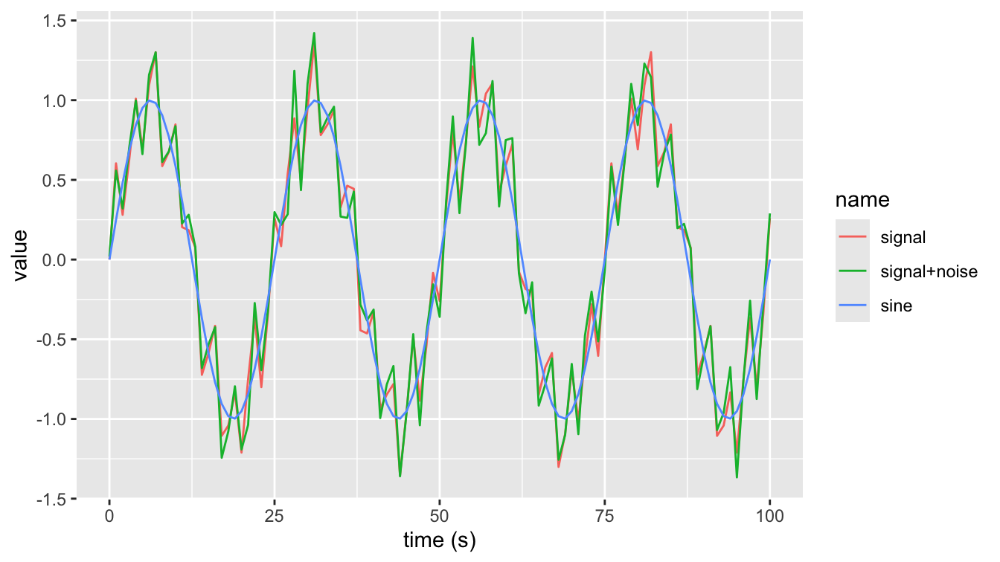
La trasformata di Fourier mostra i tre picchi attesi:
s %>%
mutate(
f = 0:(n()-1)/max(t),
fft = fft(yn),
intensity = Mod(fft) / n()*2,
phase = Arg(fft)/pi*180
) %>%
slice_head(n=as.integer(nrow(.)/2)) %>%
ggplot(aes(x=f, y=intensity)) +
geom_spoke(aes(y=0, radius=intensity, angle=pi/2)) +
geom_point()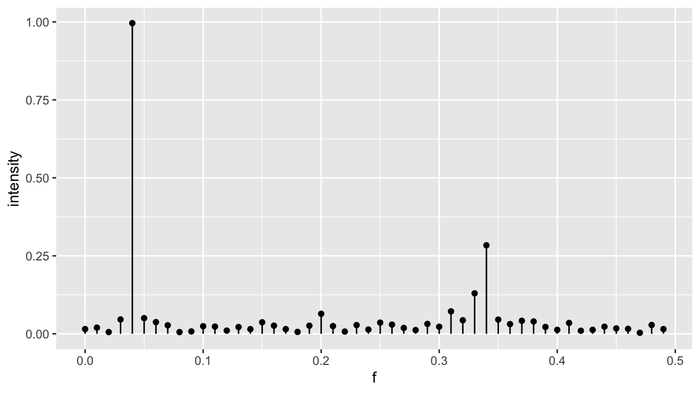
Il filtraggio online viene realizzato in due passi: prima si progetta il filtro, selezionando il tipo di filtro e i parametri che si adattano al segnale che si vuole filtrare e alla sua trasformata nel dominio delle frequenze, poi si applica il filtro al segnale.
Nel nostro caso scegliamo un filtro di tipo Butterworth di ordine 3:
ft <- 2/pars$f[1] / (1/2)
# Doppio della frequenza base
fn <- pars$f[1]*2
# Frequenza di Nyquist
fny <- 1/(s$t[2] - s$t[1]) / 2
# Frequenza di taglio
ft <- fn/fny
# Filtro Butterworth di ordine 3 con cut-off al doppio della frequenza base
# Il parametro w è normalizzato tra 0 e 1, con 1 = fny
flt <- butter(3, w=ft)
flt$b
[1] 0.01018258 0.03054773 0.03054773 0.01018258
$a
[1] 1.0000000 -2.0037975 1.4470540 -0.3617959
attr(,"class")
[1] "Arma"Come si vede, l’oggetto filtro contiene i due vettori coi coefficienti polinomiali di un modello ARMA.
La funzione freqz() consente di valutare le caratteristiche del filtro:
(fq <- freqz(flt))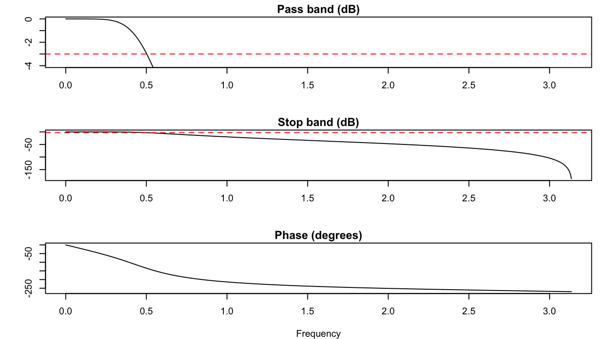
Il grafico Stop band è lo stesso grafico Pass band ma con limiti dell’asse y più ampi, in modo da evidenziare come poco oltre 3 Hz c’è un’attenuazione completa.
Grafici simili possono essere ottenuti in ggplot come segue, estraendo direttamente le componenti dall’oggetto restituito da freqz. Si noti che la componente fq$h va scomposta in modulo e fase; il modulo va poi convertito in decibel (dB) e la fase va “srotolata” (unwrap):
tibble(
h = fq$h,
mod = 20*log10(Mod(h)),
phase = Arg(h) %>% unwrap() / pi * 180,
frequency = fq$w,
) %>% {
(ggplot(., aes(x=frequency)) +
geom_line(aes(y=mod)) +
coord_cartesian(ylim=c(-4, 0.5)) +
geom_vline(xintercept=ft, color="red", linetype=2) +
labs(y="Intensity (dB)", x="")) /
(ggplot(., aes(x=frequency)) +
geom_line(aes(y=phase)) +
geom_vline(xintercept=ft, color="red", linetype=2) +
labs(y="phase (°)", x="frequency (Hz)"))
}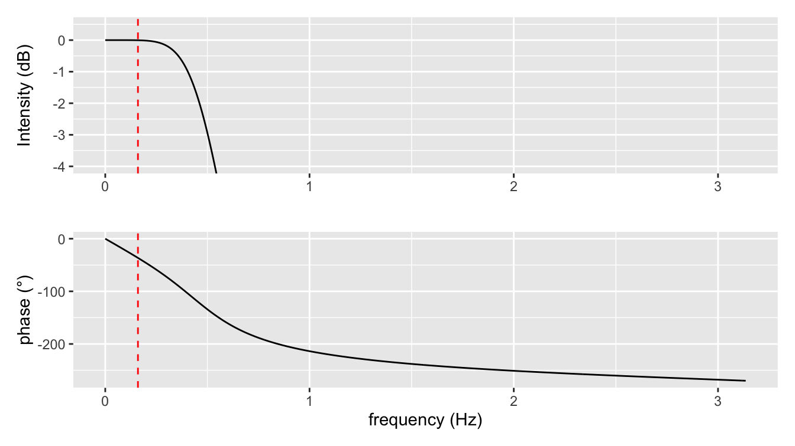
Il filtro può poi essere applicato con filter():
s %>%
mutate(
sflt = flt %>% filter(yn)
) %>%
select(t, `signal+noise`=yn, sine=s, filtered=sflt) %>%
pivot_longer(-t) %>%
ggplot(aes(x=t, y=value)) +
geom_line(aes(color=name)) +
labs(x="time (s)")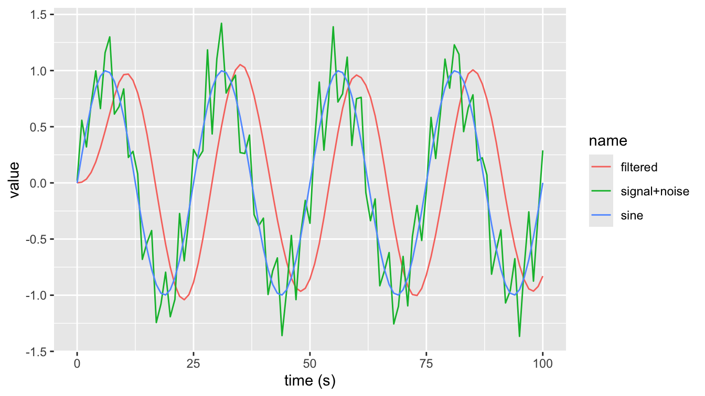
Come si vede, il filtro ripulisce sia il disturbo casuale che le armoniche con frequenza superiore alla frequenza di taglio 0.16 Hz., seppure introducendo un ritardo di fase.
Per eliminare il ritardo, se il filtro è applicato offline, si può ricorrere a filtfilt() al posto di filter(): questa funzione applica il filtraggio in avanti e indietro, compensando quindi il ritardo:
s %>%
mutate(
sflt = flt %>% filtfilt(yn)
) %>%
select(t, `signal+noise`=yn, sine=s, filtered=sflt) %>%
pivot_longer(-t) %>%
ggplot(aes(x=t, y=value)) +
geom_line(aes(color=name)) +
labs(x="time (s)")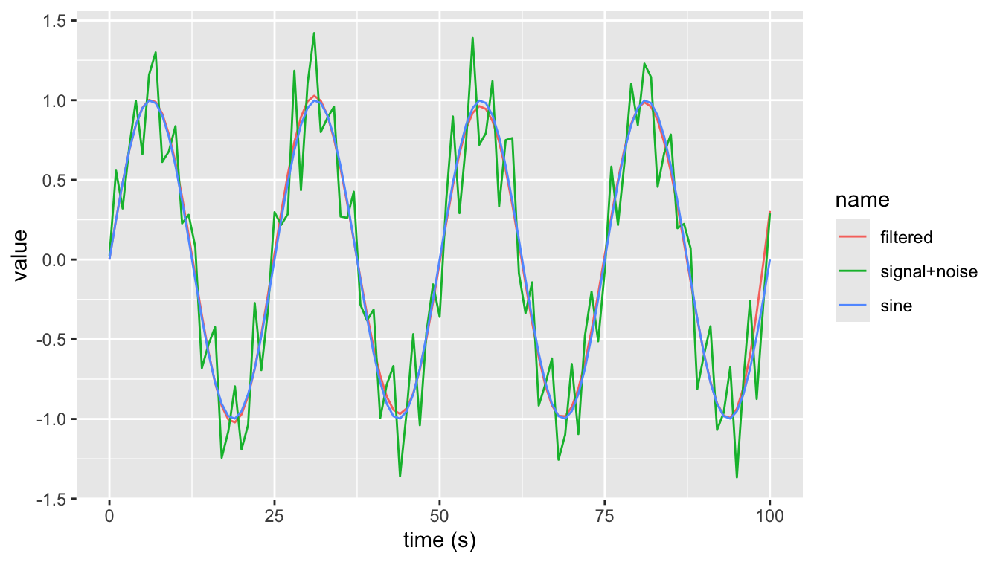
2.3.2.2 Ricorsione
Il vantaggio dei filtri online è che possono essere calcolati direttamente durante l’acquisizione di un segnale, grazie al fatto che il filtro è esprimibile come una formula di ricorsione.
La funzione butter() restituisce infatti un filtro in forma dei coefficienti di un modello \mathrm{ARMA}(p, q), per cui è possibile calcolare la nuova osservazione filtrata y_n in funzione delle precedenti osservazioni:
a_1 y_n + a_2y_{n-1} + \dots + a_{n_a}y_{n-p+1} = b_1x_n + b_2 x_{n-1} + \dots + b_{n_b}x_{n-q+1}
dove le y_i sono i valori filtrati, le x_i i valori originari, e i due vettori A e B contengono i termini a_i e b_i, con a_1 = 1. Quindi:
y_n = b_1x_n + b_2 x_{n-1} + \dots + b_{n_b}x_{n-n_b+1} - \left(a_2y_{n-1} + \dots + a_{n_a}y_{n-n_a+1}\right) \tag{13}
Per un filtro Butterworth di ordine m, si ha che p=q=m e i vettori A e B hanno entrambi m+1 elementi.
È facile implementare la Equazione 13 in un qualsiasi linguaggio di programmazione. Ad esempio in R definiamo una funzione che prende in ingresso una tabella, una nuova osservazione e il filtro (con le componenti ARMA A e B), e restituisce la stessa tabella con una riga in più (con il nuovo campione e il valore filtrato con la Equazione 13). L’inizializzazione della formula ricorsiva viene fatta con una tabella vuota (o NA):
my_filter <- function(t = NA, sample, flt) {
# Inizializzazione o aggiornamento tabella:
if (!is.data.frame(t) || nrow(t) == 0)
t <- tibble(i=1, x=sample, y=0)
else
t <- add_row(t, i = tail(t, 1)$i + 1, x=sample)
A <- flt$a
B <- flt$b
n <- nrow(t)
nb <- min(n, length(B))
# Termini Moving Average:
MA <- rev(B[1:nb]) * tail(t$x, nb)
# Termini Auto-Regressive:
AR <- rev(A[1:nb]) * tail(t$y, nb)
# Nuova osservazione filtrata:
t$y[n] <- sum(MA) - sum(AR, na.rm=TRUE)
return(t)
}In questo modo il filtro può essere applicato un’osservazione alla volta, e per questo si chiama filtro online: può cioè essere aggiornato durante l’acquisizione del segnale, pena ovviamente un ritardo sul segnale filtrato:
tibble() %>%
my_filter(1, flt) %>%
my_filter(2, flt) %>%
my_filter(3, flt) %>%
my_filter(4, flt) %>%
my_filter(5, flt) %>%
my_filter(5, flt) %>%
my_filter(5, flt) %>%
kable()| i | x | y |
|---|---|---|
| 1 | 1 | 0.0101826 |
| 2 | 2 | 0.0713167 |
| 3 | 3 | 0.2503604 |
| 4 | 4 | 0.6058080 |
| 5 | 5 | 1.1625457 |
| 6 | 5 | 1.8998389 |
| 7 | 5 | 2.7409252 |
Utilizziamolo sul segnale originale è più evidente il ritardo:
filtered_signal <- tibble()
for (sample in s$yn) {
filtered_signal <- my_filter(filtered_signal, sample, flt)
}
filtered_signal %>%
ggplot(aes(x=i)) +
geom_line(aes(y=y), color="red") +
geom_line(aes(y=x))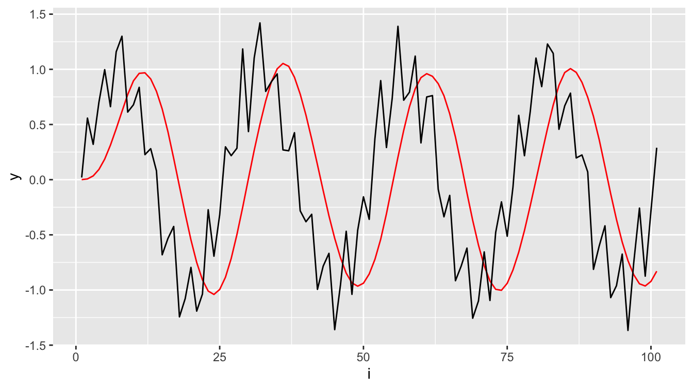
my_filter()Sfruttando la programmazione funzionale di purrr:
s$yn %>%
reduce(\(tbl, obs) my_filter(tbl, obs, flt), .init=tibble()) %>%
ggplot(aes(x=i)) +
geom_line(aes(y=y), color="red") +
geom_line(aes(y=x))
my_filter(), usando purrr2.3.2.3 Filtri IIR e FIR
Tra i filtri online c’è un’importante differenza, che classifica filtri Infinite Impulse Response (IIR) e filtri Finite Impulse Response (FIR): considerando un impulso unitario:
y(x)=\begin{cases} 0 & x < 0 \\ 1 & x \geqslant 0 \end{cases} le due classi di filtri si comportano come segue:
- IIR: sono filtri con memoria infinita: il valore filtrato dell’impulso mantiene memoria di ogni osservazione precedente e quindi non si stabilizza mai a 1 (seppure avvicinandosi sempre più). Corrispondono a filtri ARMA, in cui la parte AR ha un numero di coefficienti maggiore di uno;
- FIR: sono filtri con memoria limitata: dopo un numero di osservazioni pari alla memoria del filtro il valore filtrato è uguale a 1. Corrispondono a filtri MA (che ha memoria finita), un cui manca la parte AR (che ha memoria infinita).
Osserviamo la risposta al gradino dello stesso filtro flt sopra definito:
tibble(i=1:100, x=1) %>%
mutate(xf = filter(flt, x)) %>%
pivot_longer(-i, names_to = "signal") %>%
ggplot(aes(x=i)) +
geom_line(aes(y=value, color=signal)) 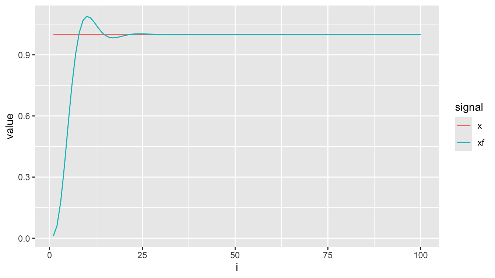
Se osserviamo un dettaglio della parte finale (i>80), possiamo verificare come in realtà il segnale filtrato non si stabilizzi mai a 1:
tibble(i=1:100, x=1) %>%
mutate(xf = filter(flt, x)) %>%
dplyr::filter(i>80) %>%
pivot_longer(-i, names_to = "signal") %>%
ggplot(aes(x=i)) +
geom_line(aes(y=value-1, color=signal)) +
scale_y_continuous(
n.breaks = 10,
labels = scales::label_scientific(digits=6)
)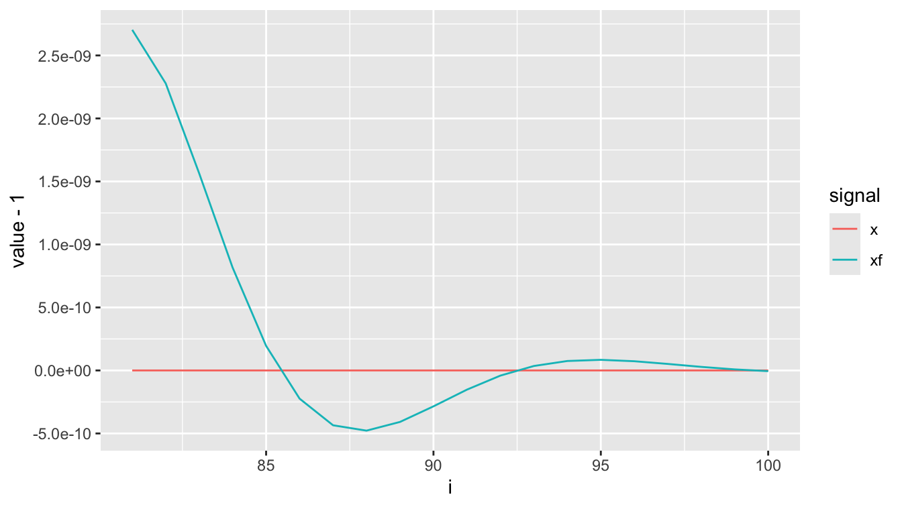
Attenzione: sia il pacchetto gsignal che dplyr (parte di tidyverse) forniscono una funzione filter(). Siccome gsignal è stato caricato dopo tidyverse, è necessario disambiguare la funzione desiderata premettendo il nome del pacchetto. Per questo motivo scriviamo dplyr::filter(i>80) anziché semplicemente filter(i>80).
Ora creiamo invece un filtro FIR di ordine 3, con la stessa frequenza di taglio, osservando come possa essere rappresentato da un modello MA con 4 termini (3+1):
(flt_fir <- fir1(3, w=ft))[1] 0.04355854 0.45644146 0.45644146 0.04355854
attr(,"class")
[1] "Ma"Le caratteristiche del filtro sono le seguenti:
freqz(flt_fir)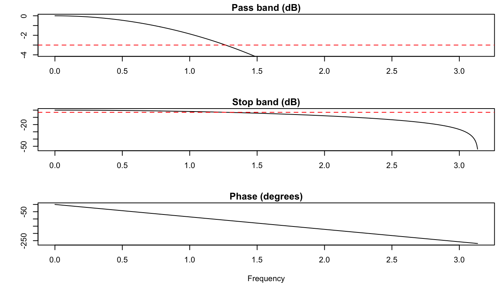
Si noti, in particolare, che la fase è lineare: ciò è un vantaggio perché può essere facilmente utilizzata per compensare il ritardo, come si vedrà più sotto.
La risposta al gradino è la seguente, notando che dopo tre osservazioni il filtro è identico al segnale:
tibble(i=1:100, x=1) %>%
mutate(xf = filter(flt_fir, x)) %>%
pivot_longer(-i, names_to = "signal") %>%
ggplot(aes(x=i)) +
geom_line(aes(y=value, color=signal)) 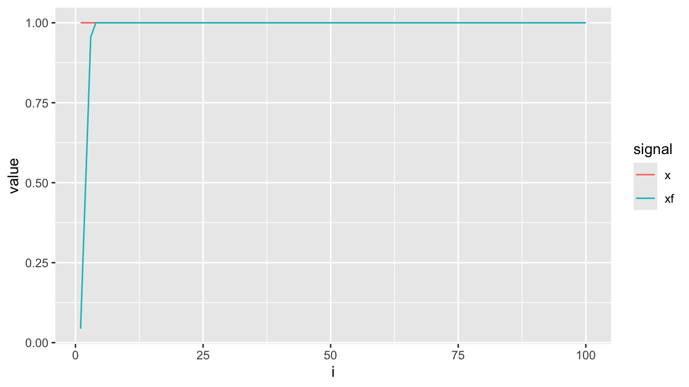
Vediamo come si comporta un filtro FIR sul segnale armonico di riferimento. Anzitutto notiamo come la caratteristica del filtro FIR sia meno aggressiva del filtro IIR a parità di banda e di ordine. Pertanto utilizziamo un filtro di ordine superiore:
flt_fir <- fir1(6, w=ft)
s %>%
mutate(
sflt = flt_fir %>% filter(yn)
) %>%
select(t, `signal+noise`=yn, sine=s, filtered=sflt) %>%
pivot_longer(-t) %>%
ggplot(aes(x=t, y=value)) +
geom_line(aes(color=name)) +
labs(x="time (s)")Dato che il ritardo di fase è lineare, è facile compensarlo: la funzione grpdelay() valuta il ritardo, e la funzione lead() (cioè lag() per ritardi negativi) lo compensa:
flt_fir <- fir1(6, w=ft)
delay <- grpdelay(flt_fir)$gd %>% mean() %>% round() %>% as.integer()
s %>%
mutate(
sflt = flt_fir %>% filter(yn),
sflt_nd = sflt %>% lead(delay)
) %>%
select(t, `signal+noise`=yn, signal=s, `filtered nd`=sflt_nd) %>%
pivot_longer(-t) %>%
ggplot(aes(x=t, y=value)) +
geom_line(aes(color=name)) +
labs(x="time (s)")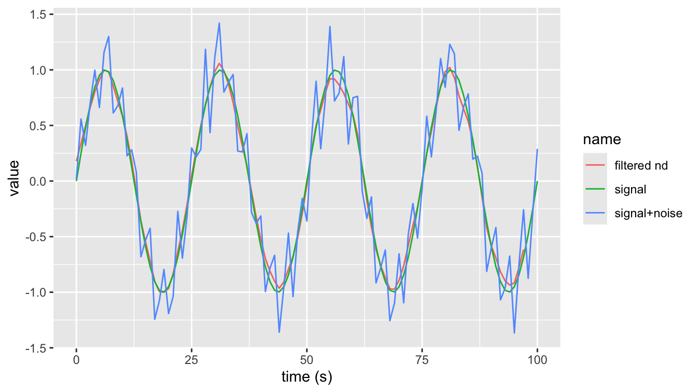
Ovviamente, la compensazione del ritardo rende un filtro FIR offline: se così non fosse, ci consentirebbe di conoscere il futuro.
2.3.2.4 Stabilità
Come abbiamo visto un filtro può essere rappresentato come un processo ARMA. In quanto tale, può presentare problemi di stabilità. Un filtro è detto stabile se la sua risposta al gradino decade a zero indefinitamente, e viceversa.
Per verificare la stabilità di un filtro lo si converte in formato zero-pole-gain, un formato che rappresenta il filtro come radici dei polinomi al numeratore della funzione di trasferimento (zeroes) e come radici del polinomio al denominatore (poles):
# poles
1/(polyroot(flt$a)) %>% zapsmall() %>% rev()[1] 0.5913983+0.0000000i 0.7061996+0.3362227i 0.7061996-0.3362227i# zeroes
1/(polyroot(flt$b)) %>% zapsmall() %>% rev()[1] -1+0i -1+0i -1+0iMediante gsignal è più semplice convertire il filtro in formato Zpg:
flt %>% as.Zpg()$z
[1] -1.0000016-2.850647e-06i -1.0000016+2.850647e-06i -0.9999967+0.000000e+00i
$p
[1] 0.5913984+0.0000000i 0.7061996-0.3362227i 0.7061996+0.3362227i
$g
NULL
attr(,"class")
[1] "Zpg"Un filtro è stabile quando tutti i poli sono all’interno del cerchio unitario sul piano immaginario:
circle <- function(r=1, x0=0, y0=0, n=100, phi = 0) {
tibble(
i = 0:n,
theta = i * 2*pi / n,
x = x0 + r*cos(theta + phi),
y = y0 + r*sin(theta + phi)
)
}
flt %>% as.Zpg() %>% {
tibble(
zr = Re(.$z),
zi = Im(.$z),
pr = Re(.$p),
pi = Im(.$p)
)} %>%
ggplot() +
geom_point(aes(x=zr, y=zi), shape=21) +
geom_point(aes(x=pr, y=pi), shape=4) +
geom_path(data=circle(), aes(x=x, y=y), color="red") +
coord_equal() +
labs(x="Real", y="Imaginary", title="Zero-Pole diagram")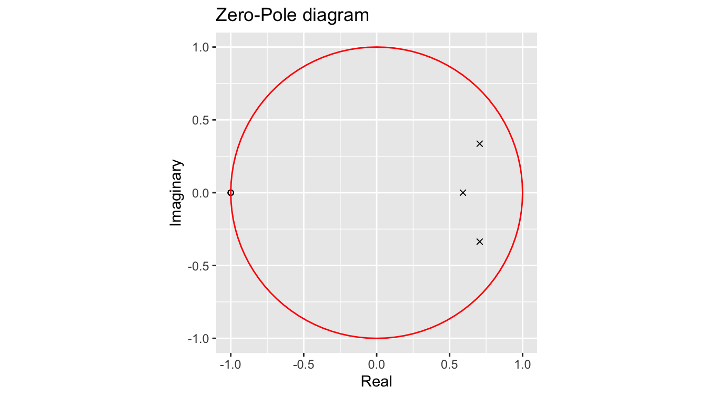
2.3.3 Filtri offline
Se non è necessario applicare il filtro durante l’acquisizione ma si può farlo ex-post, è possibile ricorrere alla trasformata di Fourier. Il processo è il seguente:
- Si calcola la FFT del segnale (senza applicare una finestra)
- Si definisce una funzione maschera che, moltiplicata per lo spettro, riduca o annulli le bande di frequenza che si desidera attenuare
- si calcola la trasformata inversa della trasformata moltiplicata per la maschera.
Vediamo ad esempio il caso di un segnale ottenuto da un elettrocardiogramma, con frequenza di 256 Hz per una durata di 10 s, disponibile nel data frame gsignal::signals:
signals %>%
mutate(
t = seq(0, 10, length.out=n()),
) %>%
ggplot(aes(x=t, y=ecg)) +
geom_line() +
labs(color="segnale", x="tempo (s)", y="tensione (µV)")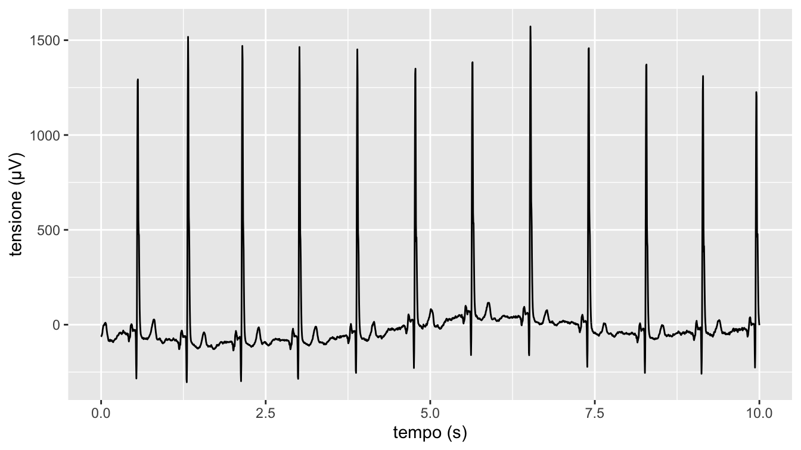
Osserviamo il modulo della trasformata: decidiamo di filtrare le frequenze sopra 10 Hz.
signals %>%
mutate(
i = (1:n())-1,
t = seq(0, 10, length.out=n()),
f = i / max(t),
fft = fft(ecg),
intensity = Mod(fft) / n() * 2
) %>%
ggplot(aes(x=f)) +
geom_line(aes(y=intensity)) +
scale_x_continuous(minor_breaks = scales::minor_breaks_n(11)) +
labs(x="frequenza (Hz)", y="tensione (µV)")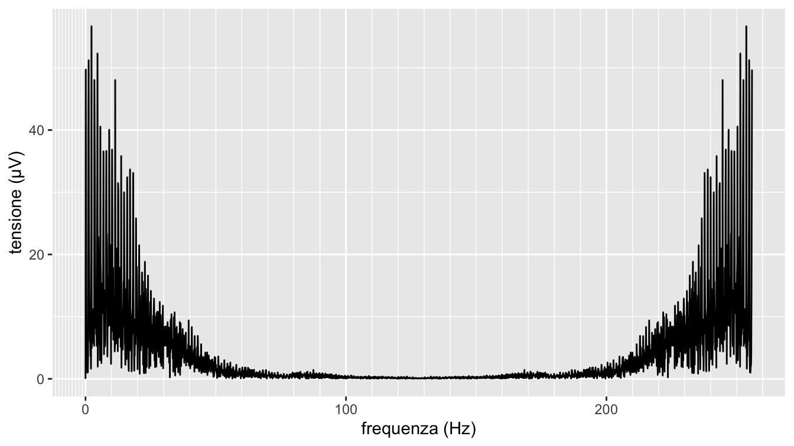
Per farlo definiamo una funzione filtro mediante una gaussiana dnorm() (anche se potremmo usare altre funzioni a piacere, a seconda del risultato desiderato). Si noti che la funzione maschera deve essere simmetrica attorno alla frequenza di Nyquist come lo è la trasformata.
width <- 8
off <- 0
sig <- signals %>%
mutate(
i = (1:n())-1,
t = seq(0, 10, length.out=n()),
f = i / max(t),
filter =
(dnorm(f, mean=off, sd=width) + dnorm(f, mean=max(f)-off, sd=width)) /
dnorm(0, mean=0, sd=width),
fft = fft(ecg),
fft_f = fft * filter,
intensity = Mod(fft) / n() * 2,
intensity_f = Mod(fft_f) / n() * 2,
phase = Arg(fft)/pi*180
)
sf <- 30
sig %>%
ggplot(aes(x=f)) +
geom_line(aes(y=intensity)) +
geom_line(aes(y=filter*sf), color="red") +
scale_x_continuous(minor_breaks = scales::minor_breaks_n(11)) +
scale_y_continuous(
sec.axis = sec_axis(~ . / sf, name = "filter")
)+
labs(x="frequenza (Hz)", y="tensione (µV)")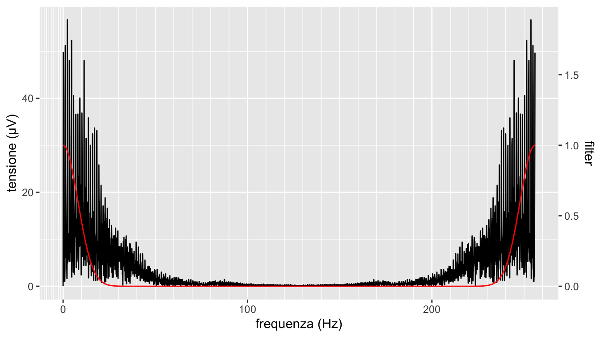
La funzione maschera è stata riscalata in modo da valere 1 al suo massimo. Inoltre, l’ultimo grafico riporta la maschera sul secondo asse verticale, per leggibilità.
La trasformata moltiplicata per la maschera risulta:
sig %>%
ggplot(aes(x=f)) +
geom_line(aes(y=intensity_f)) +
geom_line(aes(y=filter*sf), color="red") +
scale_x_continuous(minor_breaks = scales::minor_breaks_n(11)) +
scale_y_continuous(
sec.axis = sec_axis(~ . / sf, name = "filter")
)+
labs(x="frequenza (Hz)", y="tensione (µV)")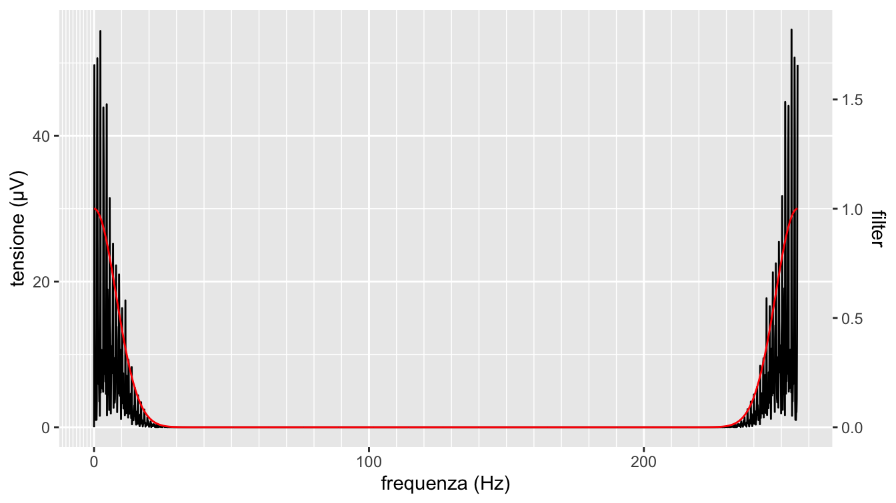
A questo punto possiamo anti-trasformare la trasformata mascherata, per ottenere il segnale filtrato e privo di ritardo:
sig %>%
mutate(
ecg_f = Re(ifft(fft_f))
) %>%
select(t, ECG=ecg, `ECG (filt.)`=ecg_f) %>%
pivot_longer(-t) %>%
ggplot(aes(x=t)) +
geom_line(aes(y=value, color=name)) +
coord_cartesian(xlim=c(0,2), ylim=c(-200, 200)) +
labs(color="segnale", x="tempo (s)", y="tensione (µV)")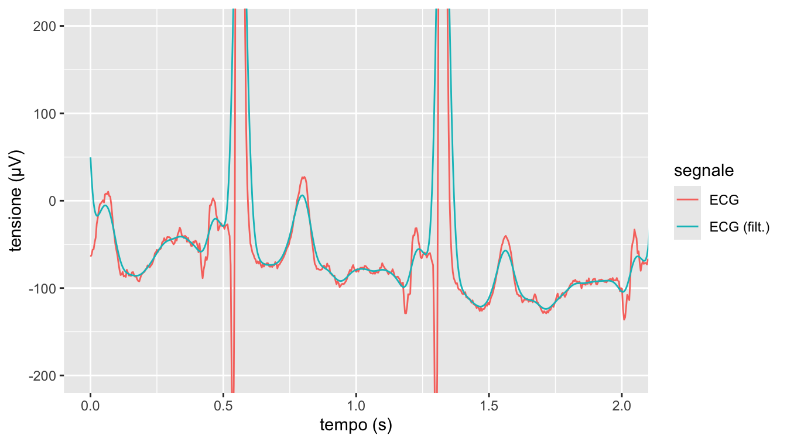
Si noti che la anti-trasformata restituisce un segnale complesso, per cui è necessario scartare la parte immaginaria.
ESERCIZIO: cambiare i valori di off e width per osservare come modificando la maschera cambia il segnale filtrato.
3 Taratura dinamica
3.1 Sonda PT100
Consideriamo il caso di una sonda PT100 immersa repentinamente in un bagno termostatato. La temperatura della sonda raggiunge quella del bagno secondo la legge:
T(t) = (T_i - T_f)e^{-\frac{t}{\tau}} + T_f \tag{14}
Sappiamo che T_i = 33.4 °C, T_f = 95 °C e stimiamo che l’immersione inizi a t_0 = 50 s.
ggplot(temp, aes(x=t, y=T)) +
geom_line() +
geom_line(aes(y=Tn), color="red", linewidth=1/3) +
labs(x="tempo (s)", y="temperatura (°C)")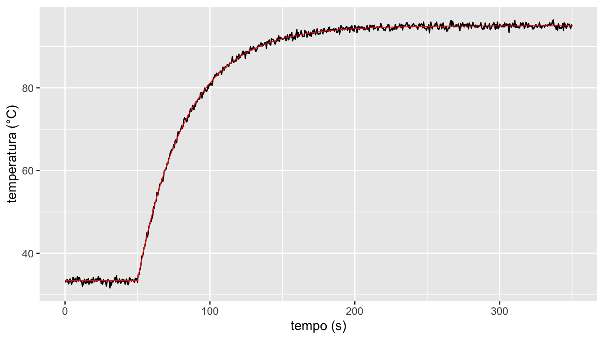
3.1.1 Primo metodo: intercetta
Secondo la Equazione 14, a t=\tau si ha che T(\tau) = (T_i-T_f)e^{-1} + T_f, cioè:
\begin{align} T_f - T(\tau) &= (T_f - T_i)e^{-1} \\ &= (95 - 33.4) \cdot 0.368 \\ &= 61.6 \cdot 0.368 \\ &= 22.661 \end{align}
cioè T(\tau) = 72.339 °C. In grafico:
Ttau <- Tf - (Tf - Ti)*exp(-1)
ggplot(temp, aes(x=t, y=T)) +
geom_line() +
geom_hline(yintercept = Ttau, color="blue") +
labs(x="tempo (s)", y="temperatura (°C)")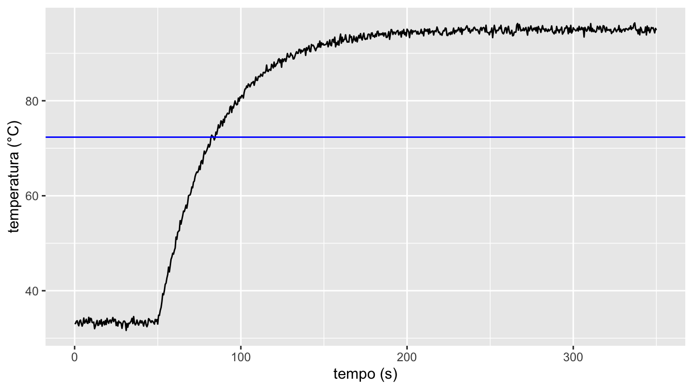
Cioè risulta graficamente che \tau è la distanza tra l’inizio del transitorio e l’intersezione con la linea blu. Sui dati:
temp %>%
select(t, T) %>% # solo le colonne t e T
mutate(t = t - 50) %>% # traslo i tempi all'inizio
dplyr::filter(T<Ttau) %>% # solo i valori < Ttau
slice_tail(n=1) %>% # prendo solo l'ultima riga
knitr::kable()| t | T |
|---|---|
| 34.5 | 72.21123 |
3.1.2 Secondo metodo: linearizzazione
La Equazione 14 può essere linearizzata così:
\begin{align} \frac{T(t) -T_f}{T_i - T_f} &= e^{-\frac{t}{\tau}} \\ \ln\left(\frac{T(t) -T_f}{T_i - T_f}\right) &= \ln(e^{-\frac{t}{\tau}}) \\ \ln\left(\frac{T(t) -T_f}{T_i - T_f}\right) &= -\frac{t}{\tau} \end{align}
Posso riorganizzare i dati come segue:
temp.l <- temp %>%
select(t, T) %>%
mutate(t = t - 50) %>%
dplyr::filter(t>0 & t < 100) %>%
mutate(y = log((T-Tf)/(Ti - Tf))) %>%
dplyr::filter(!is.nan(y))
temp.lm <- temp.l %>% lm(y~t-1, data=.)
temp.lm %>% summary()
Call:
lm(formula = y ~ t - 1, data = .)
Residuals:
Min 1Q Median 3Q Max
-0.313058 -0.014549 0.002823 0.025161 0.239993
Coefficients:
Estimate Std. Error t value Pr(>|t|)
t -2.997e-02 8.037e-05 -372.8 <2e-16 ***
---
Signif. codes: 0 '***' 0.001 '**' 0.01 '*' 0.05 '.' 0.1 ' ' 1
Residual standard error: 0.06538 on 198 degrees of freedom
Multiple R-squared: 0.9986, Adjusted R-squared: 0.9986
F-statistic: 1.39e+05 on 1 and 198 DF, p-value: < 2.2e-16tau <- round(-1/temp.lm$coefficients, 1)
cat(paste("tau:", tau))tau: 33.4temp.l %>%
ggplot(aes(x=t, y=y)) +
geom_smooth(method="lm", formula = y~x-1) +
geom_point(size=0.5) +
labs(x="tempo (s)",
y=latex2exp::TeX("$\\log_{10}(\\frac{T-T_f}{T_i-T_f})$ (T in °C)"))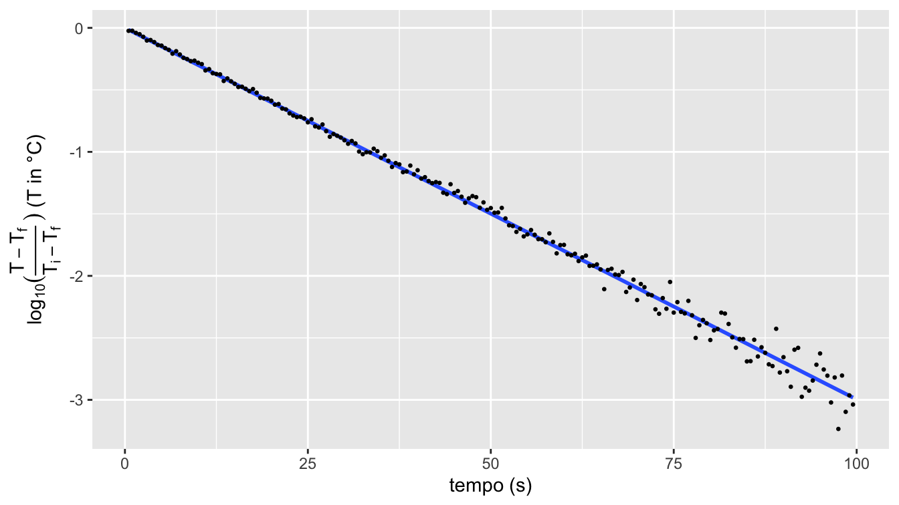
3.1.3 Terzo metodo: regressione non-lineare
Con il terzo metodo si usa la regressione non-lineare ai minimi quadrati per ottenere direttamente tutti e tre i parametri T_i, T_f, \tau:
temp.l <- temp %>%
select(t, T) %>%
mutate(t = t - 50) %>%
dplyr::filter(t>0)
fit <- nls(T~(Ti - Tf)*exp(-t/tau) + Tf,
data = temp.l,
start = list(
Ti=30,
Tf=100,
tau=10
))
fitNonlinear regression model
model: T ~ (Ti - Tf) * exp(-t/tau) + Tf
data: temp.l
Ti Tf tau
33.29 95.02 33.52
residual sum-of-squares: 161.1
Number of iterations to convergence: 5
Achieved convergence tolerance: 1.212e-08temp.l %>%
modelr::add_predictions(fit, var="fit") %>%
ggplot(aes(x=t, y=T)) +
geom_line() +
geom_line(aes(y=fit), color="red", linewidth=1/4) +
labs(x="tempo (s)", y="temperatura (°C)")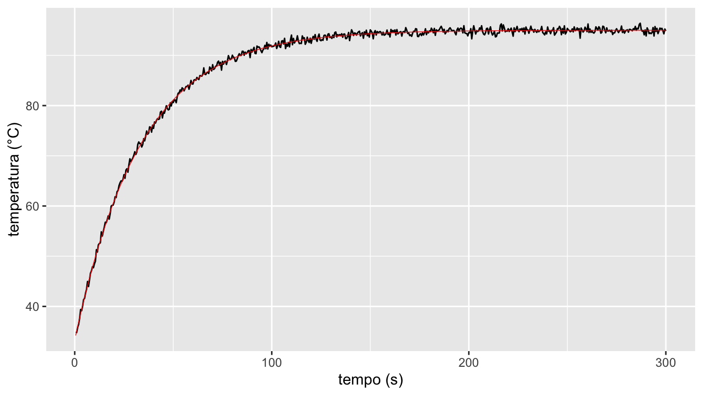
Si notino i valori iniziali approssimativi passati per i tre parametri.
I vantaggi di questo terzo metodo sono:
- non è necessario stimare soggettivamente T_i e T_f, ma vengono identificati direttamente dalla regressione
- definendo il modello per parti (cioè costante per t<t_i), è possibile identificare anche t_i (lo si lascia per esercizio)
- mediante il metodo bootstrap è possibile ottenere gli intervalli di confidenza su tutti e tre i parametri (lo si lascia per esercizio)
Per contro, è computazionalmente più complesso, mentre il primo e al limite anche il secondo metodo possono essere applicati anche “a mano”.
Esercizio
Definire una funzione piecewise costante fino a T_i e poi esponenziale e regredire tale funzione, identificando anche T_i
3.2 Considerazioni sulla relazione tra costante di tempo e funzione di trasferimento
Importante
Mancano pagine 53-54.
4 Compensazione o misura dinamica
Importante
Mancano pagine 55-58.
5 Determinazione Funzioni di Trasferimento mediante Parametri Concentrati ed Impedenze Generalizzate
Importante
Mancano pagine 66-81, ma i due esempi originariamente in tabella sono qui riportati per esteso nel capitolo seguente.
Di seguito, anziché utilizzare la funzione gsignal::bodeplot(), che usa la vecchia interfaccia per i grafici, utilizzeremo una funzione da noi definita, ggbodeplot(), basata su ggplot2. La definizione di questa funzione non è essenziale.
ggbodeplot function
library(control)
library(signal)
ggbodeplot <- function(tf, fmin=1, fmax=1e4, df=0.01) {
# vector of points for each order of magnitude (OOM):
pts <- 10^seq(0, 1, df) %>% tail(-1)
# vector of OOMs:
ooms <- 10^(floor(log10(fmin)):ceiling(log10(fmax)-1))
# combine pts and ooms:
freqs <- as.vector(pts %o% ooms)
# warning: bode wants pulsation!
bode(tf, freqs*2*pi) %>% {
tibble(f=.$w/(2*pi), `magnitude (dB)`=.$mag, `phase (deg)`=.$phase)} %>%
pivot_longer(-f) %>%
ggplot(aes(x=f, y=value)) +
geom_line() +
scale_x_log10(
minor_breaks=scales::minor_breaks_n(10),
labels= ~ latex2exp::TeX(paste0("$10^{", log10(.), "}$"))) +
facet_wrap(~name, nrow=2, scales="free") +
labs(x="frequency (Hz)")
}5.1 Esempio: sistema per isolamento da vibrazioni.
Con il metodo delle impedenze generalizzate si ottiene:
H(i\omega)=\frac{V_\mathrm{out}(i\omega)}{V_\mathrm{in}(i\omega)}=\frac{C i\omega + K}{M (i\omega)^2 + C i\omega + K} \tag{15}
La frequenza naturale del sistema è f_0=\frac{1}{2\pi}\sqrt{\frac{K}{M}}, e l’attenuazione comincia a \sqrt{2}f_0.
Possiamo definire la funzione di trasferimento in Equazione 15 con la funzione control::tf(), che prende come due argomenti due vettori con i coefficienti della Equazione 15, in ordine decrescente di grado della variabile i\omega:
M <- 10
K <- 1000
C <- 50
# Frequenza naturale:
f0 <- 1/(2*pi) * sqrt(K/M)
tf(c(C, K),c(M, C, K)) %>%
ggbodeplot(fmin=0.1, fmax=100) +
geom_vline(xintercept=c(1, sqrt(2)) * f0, color="red", linetype=2) +
labs(title=paste(
"Natural frequency:", round(f0, 2), "Hz",
" - Isolation: >", round(sqrt(2)*f0, 2), "Hz"))
Decibel — La magnitudine della funzione di trasferimento è espressa in decibel (dB). Un decibel corrisponde a 10 \log_{10}(X). Tuttavia è d’uso scalare la magnitudine in modo che rappresenti il rapporto tra le potenze, che dipende dal quadrato della variabile in oggetto. Quindi l’effettiva relazione diventa 20 \log_{10}(X).
In altre parole, un rapporto pari a 1:10 sulla variabile corrisponde a 1:100 sulla potenza; quindi se esprimo la magnitudine come 20 \log_{10}(X) significa che un’attenuazione di -10 dB_{20} sul segnale corrisponde a -10 dB_{10} sulla potenza. Ancora più chiaramente: -20 dB sulla magnitudine significa un’attenuazione di 10 volte sul segnale, 100 volte sulla potenza.
Si noti che lo stesso risultato si ottiene a partire dalle equazioni della dinamica del sistema, effettuando la trasformata di Laplace \mathcal{L}:
\begin{align} M\ddot y + C\dot y + Ky &= C\dot x + K x \\ &\downarrow \mathcal{L}\left(\frac{\mathrm{d}^nx}{\mathrm{d}t^n}\right) = s^n X(s) \\ M s^2 Y(s) + C s Y(s) + K Y(s) &= CsX(s) + KX(s) \end{align}
dalla quale otteniamo l’espressione per la funzione di trasferimento:
H(s) = \frac{Y(s)}{X(s)} = \frac{Cs + K}{Ms^2 + Cs + K } che corrisponde alla Equazione 15 a meno della sostituzione s=i\omega.
5.2 Esempio: accoppiamento rotativo motore-carico.
Con il metodo delle impedenze generalizzate si ottiene:
H(i\omega) = \frac{1}{I_c (i\omega)^2 + Ci\omega + K} = \frac{1}{I_c/K (i\omega)^2 + C/K i\omega + 1}
La frequenza naturale può essere ottenuta con la funzione control::damp(), campo omega:
Ic <- 10e-3
K <- 5000
C <- 1
H <- tf(1,c(Ic/K, C/K, 1))
H.d <- damp(H, doPrint=FALSE)
H %>%
ggbodeplot(fmin=10, fmax=1e4) +
geom_vline(xintercept=c(1, sqrt(2)) * H.d$omega[1]/(2*pi), color="red", linetype=2) +
labs(title=paste(
"Natural frequency:", round(f0, 2), "Hz",
" - Isolation: >", round(sqrt(2)*f0, 2), "Hz"))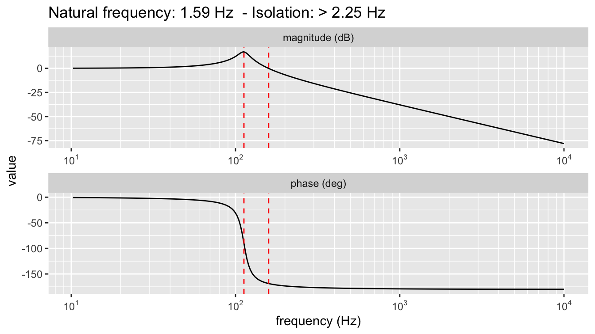
Note
F. Angrilli, Misure Meccaniche e Termiche, Cedam 2005↩︎